Chapter 12 R 데이터 수집
이 장에서는 다양한 원천에서 데이터를 R로 가져오는 방법을 다룬다.
- 텍스트 파일에서 데이터 가져오기
- 스프레드시트 파일에서 데이터 가져오기
- 데이터베이스에서 데이터 가져오기
- 웹 스크래핑 (web scrapping): 웹 사이트에서 데이터 가져오기
- 공개 API에서 데이터 가져오기
12.1 텍스트 파일에서 데이터 읽기
R의 기본 기능을 사용하여 텍스트 파일을 읽고 쓰는 방법에 대해서는 6.6과 6.7 절에서 설명을 하였다.
이 절에서는 tidyverse 패키지에 포함된 readr 패키지의 read_csv() 함수를 사용하여 CSV 형식의 파일을 읽어오는 방법을 배운다.
R의 기본 기능에 포함된 read.csv() 함수와의 차이는 다음과 같다.
- 읽어들인 파일을
data.frame형식이 아니라tibble형식의 데이터로 반환한다. - 데이터의 열의 데이터형과 변환을 더 상세히 조절할 수 있다.
CSV 파일
CSV 파일은 데이터의 각 필드가 쉼표로 분리되어 있는 파일이다. 대부분의 통계 패키지뿐 아니라 다수의 SW에서 지원하는 파일 형식이다. Excel 등의 스프레드시트 파일도 CSV 파일로 저장할 수 있다. Excel의 버전에 따라 저장방식이 조금 차이가 있을 수 있으나, 대부분 ’다른 이름으로 저장’에서 파일 형식을 CSV 형식으로 지정해 주면 된다.
CSV 파일을 읽어들이는 예제는 다음 파일을 사용하니 예제를 따라하고자 하는 독자는 내려받도록 하자.
텍스트 파일 내려받기작업 디렉토리 설정
파일을 불러오기 전에 주의할 점은 파일의 이름만으로 파일을 읽어오고 싶으면 현재의 작업 디렉토리(폴더)에 파일이 있어야 한다는 것이다. 그렇지 않은 경우에는 파일의 절대 경로를 모두 써 주어야만 읽어올 수 있다.
R 윈도우 버전에서 작업 디렉터리의 변경은 [파일]-[작업디렉토리변경] 메뉴를 이용하면 된다. RStudio에서는 [Session]-[Set Working Directory]-[Choose Directory] 메뉴를 이용하면 된다. 현재의 작업 디렉터리가 어디인지를 알기 위해서는 getwd() 명령을 이용하면 된다. 현재 작업 디렉터리의 파일을 보고 싶으면 list.files() 명령을 이용한다.
R 명령으로 작업 디렉터리를 변경하려면 setwd()를 이용한다. 다음은 getwd()로 현재 작업 디렉토리를 얻은 후 setwd()로 data라는 하위 디렉토리(폴더)로 작업 디렉토리를 변경하고, 그 안에 있는 파일이름에 csv 확장자가 있는 파일 목록을 확인하는 예이다.
[1] "students_all.csv" "students-cp949.csv"
[3] "students-with-comments.csv" "students-with-comments2.csv"
[5] "students-with-problems.csv" "students.csv"
[7] "students2.csv" "suicide_rates.csv" read_csv()
다음은 suicide_rates.csv이라는 파일에 저장된 데이터를 읽어서 sr이라는 변수에 할당하는 예이다.
Rows: 105 Columns: 4
── Column specification ────────────────────────────────────────────────────────
Delimiter: ","
chr (1): Country
dbl (3): Year, Males, Females
ℹ Use `spec()` to retrieve the full column specification for this data.
ℹ Specify the column types or set `show_col_types = FALSE` to quiet this message.read_csv() 함수는 파일을 읽은 후에 파일의 데이터에 대한 다음의 정보를 출력한다.
- 데이터의 행과 열 수
- 열 구분자로 사용한 문자. 이 예에서처럼
read_csv()는,또는 Tab 문자를 기준으로 열을 분리한다. 이 외의 열 구분자를 사용하려면delim인수로 한 문자로 된 열 구분자를 따로 지정할 수 있다. - 함수가 추정한 열 자료형과 열 이름:
read_csv()는 사용자가 열의 자료형과 이름을 제공하지 않으면, 데이터 형식과 첫 행을 사용하여 이를 추정한다. 이 예에서는 데이터에서Country라는 문자열 열과,Year,Males,Females라는 부동소수점 열을 읽어왔음을 보여준다.read_csv()는 열의 자료형, 열의 이름, 읽어올 열을 선택할 수 있다.spec()함수를 사용하면 열에 대한 상세한 명세를 확인할 수 있다.read_csv()의show_col_types=FALSE로 설정하면 출력은 생략된다.
cols(
Country = col_character(),
Year = col_double(),
Males = col_double(),
Females = col_double()
)sr 변수를 출력해 보면 읽어들인 데이터를 확인할 수 있다.
suicide_rates.csv는 총 105개 국(Country)의 남여 자살률(Males, Females)과 조사년도(Year)에 대한 데이터이다.
read_csv()는 tibble` 형식으로 데이터를 반환하므로 처음 10 개 행만 출력하고, 열도 사용자의 콘솔의 폭이 충분하지 않으면 처음 몇 개의 열만 출력할 수 있다.
# A tibble: 105 × 4
Country Year Males Females
<chr> <dbl> <dbl> <dbl>
1 ALBANIA 3 4.7 3.3
2 ANTIGUA AND BARBUDA 95 0 0
3 ARGENTINA 8 12.6 3
4 ARMENIA 8 2.8 1.1
5 AUSTRALIA 6 12.8 3.6
6 AUSTRIA 9 23.8 7.1
7 AZERBAIJAN 7 1 0.3
8 BAHAMAS 5 1.9 0.6
9 BAHRAIN 6 4 3.5
10 BARBADOS 6 7.3 0
# ℹ 95 more rows읽어들인 각 국의 성별 자살률 데이터를 시각화해 보자.
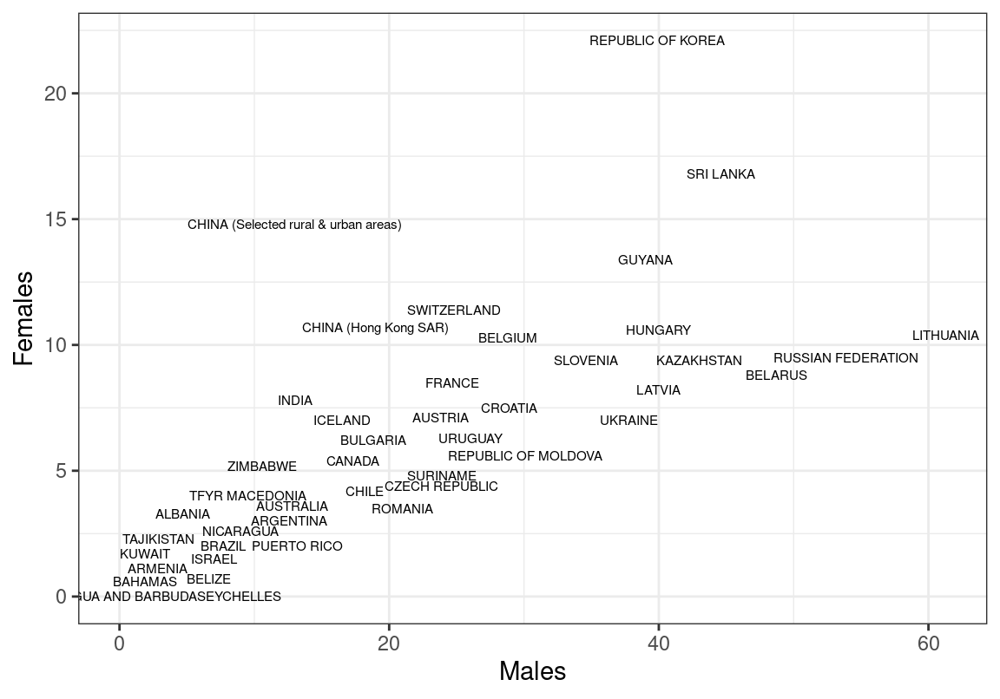
한글 파일 인코딩
students.csv와 students-cp949.csv는 동일한 데이터를 UTF-8과 CP949라는 인코딩 방식으로 저장한 파일이다.
두 파일을 Excel에서 열어보면 students.csv 파일의 한글은 깨져 보이는데, students-cp949.csv 파일의 한글은 제대로 보인다.
이러한 현상이 발생하는 이유는, 윈도우즈는 CP949라는 인코딩 방식으로 한글을 처리하기 때문이다.
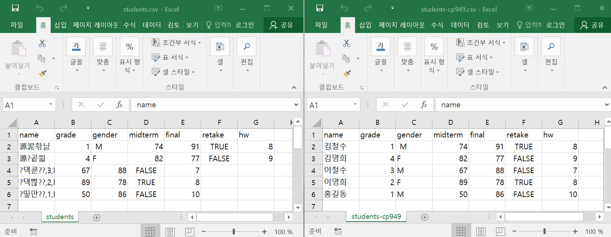
이번엔 이 두 파일을 R로 읽어들여 보자.
Rows: 5 Columns: 7
── Column specification ────────────────────────────────────────────────────────
Delimiter: ","
chr (2): name, gender
dbl (4): grade, midterm, final, hw
lgl (1): retake
ℹ Use `spec()` to retrieve the full column specification for this data.
ℹ Specify the column types or set `show_col_types = FALSE` to quiet this message.# A tibble: 5 × 7
name grade gender midterm final retake hw
<chr> <dbl> <chr> <dbl> <dbl> <lgl> <dbl>
1 김철수 1 M 74 91 TRUE 8
2 김영희 4 F 82 77 FALSE 9
3 이철수 3 M 67 88 FALSE 7
4 이영희 2 F 89 78 TRUE 8
5 홍길동 1 M 50 86 FALSE 10Rows: 5 Columns: 7
── Column specification ────────────────────────────────────────────────────────
Delimiter: ","
chr (2): name, gender
dbl (4): grade, midterm, final, hw
lgl (1): retake
ℹ Use `spec()` to retrieve the full column specification for this data.
ℹ Specify the column types or set `show_col_types = FALSE` to quiet this message.# A tibble: 5 × 7
name grade gender midterm final retake hw
<chr> <dbl> <chr> <dbl> <dbl> <lgl> <dbl>
1 "\xb1\xe8\xc3\xb6\xbc\xf6" 1 M 74 91 TRUE 8
2 "\xb1\xe8\xbf\xb5\xc8\xf1" 4 F 82 77 FALSE 9
3 "\xc0\xcc\xc3\xb6\xbc\xf6" 3 M 67 88 FALSE 7
4 "\xc0\xcc\xbf\xb5\xc8\xf1" 2 F 89 78 TRUE 8
5 "\xc8\xab\xb1\xe6\xb5\xbf" 1 M 50 86 FALSE 10R에서 students.csv 파일의 한글은 잘 읽어오는데, students-cp949.csv 파일의 한글은 제대로 읽어오지 못했다.
이러한 현상이 발생하는 이유는 R은 디폴트로 UTF-8 인코딩으로 파일을 처리하기 때문이다.
Windows를 제외하고 Mac, Linux, 그리고 많은 웹 문서들은 UTF-8을 기준으로 파일을 인코딩한다.
그렇기 때문에 R의 많은 함수들은 기본적으로 UTF-8으로 파일을 처리한다.
그러면 윈도우즈의 Excel에서 데이터를 CSV 파일로 저장하면 CP949로 인코딩되는데 R에서는 이 CSV 파일을 어떻게 읽어와야 할까?
가장 쉬운 방법은 Excel 파일의 데이터를 CSV 파일로 저장하지 않고 Excel 파일 그 자체로 읽어들이는 것이다. 이에 대해서는 12.2.1에서 설명한다.
다른 한 방법은 read_csv()의 locale 인수에 인코딩을 CP949로 지정하는 것이다.
Rows: 5 Columns: 7
── Column specification ────────────────────────────────────────────────────────
Delimiter: ","
chr (2): name, gender
dbl (4): grade, midterm, final, hw
lgl (1): retake
ℹ Use `spec()` to retrieve the full column specification for this data.
ℹ Specify the column types or set `show_col_types = FALSE` to quiet this message.# A tibble: 5 × 7
name grade gender midterm final retake hw
<chr> <dbl> <chr> <dbl> <dbl> <lgl> <dbl>
1 김철수 1 M 74 91 TRUE 8
2 김영희 4 F 82 77 FALSE 9
3 이철수 3 M 67 88 FALSE 7
4 이영희 2 F 89 78 TRUE 8
5 홍길동 1 M 50 86 FALSE 10locale 인수를 설정할 때는 locale() 함수를 사용하는데, 지역에 특화된 인코딩 방식(encoding)뿐만 아니라, 날짜와 시간의 형식, 숫자 형식 등도 지정할 수 있으니 도움말을 참조하기 바란다.
파일의 주석문 생략하기
students-with-comments.csv 파일을 read_csv() 파일로 읽어보자.
Warning: One or more parsing issues, call `problems()` on your data frame for details,
e.g.:
dat <- vroom(...)
problems(dat)Rows: 9 Columns: 1
── Column specification ────────────────────────────────────────────────────────
Delimiter: ","
chr (1): # 이 파일은 어떤 과목을 수강하는 학생들에 대한 정보이다.
ℹ Use `spec()` to retrieve the full column specification for this data.
ℹ Specify the column types or set `show_col_types = FALSE` to quiet this message.# A tibble: 9 × 1
`# 이 파일은 어떤 과목을 수강하는 학생들에 대한 정보이다.`
<chr>
1 # name은 이름, grade는 학년, gender는 성별,
2 # midterm과 final은 중간과 기말고사 점수
3 # retake는 재수강 여부, hw은 숙제 점수를 나타낸다.
4 name,grade,gender,midterm,final,retake,hw
5 김철수,1, M,74,91,TRUE,8
6 김영희,4,F,82,77,FALSE,9
7 이철수,3,M,67,88,FALSE,7
8 이영희,2,F,89,78,TRUE,8
9 홍길동,1,M,50,86,FALSE,10 이 파일의 앞 부분에는 파일을 설명하는 4 줄의 주석문(comments)이 있다.
read_csv() 함수는 기본적으로 파일의 첫 줄은 열 이름을 나타내는 행으로, 그 다음 줄부터는 데이터의 행으로 간주한다.
앞의 예에서는 파일의 주석문을 열 이름으로 간주하여 오직 한 열만 있는 데이터로 파일을 읽어들였다. 이를 확인하려면 읽어들인 데이터의 행과 열수를 보면 된다.
이러한 현상이 발생한 이유는, 파일의 첫 줄에 쉼표(,)나 Tab이 사용되지 않았기 때문에 이 데이터는 오직 하나의 열로 구성된 데이터로 파악했기 때문이다.
그러므로 열의 자료형도 문자와 숫자를 모두 저장할 수 있는 문자열로 추정되었다.
파일의 앞부분에 주석문이 있는 경우에는 skip 인수를 사용하여 생략할 줄의 수를 지정하면, 열 이름이 시작되는 부분부터 데이터를 읽어들일 수 있다.
Rows: 5 Columns: 7
── Column specification ────────────────────────────────────────────────────────
Delimiter: ","
chr (2): name, gender
dbl (4): grade, midterm, final, hw
lgl (1): retake
ℹ Use `spec()` to retrieve the full column specification for this data.
ℹ Specify the column types or set `show_col_types = FALSE` to quiet this message.# A tibble: 5 × 7
name grade gender midterm final retake hw
<chr> <dbl> <chr> <dbl> <dbl> <lgl> <dbl>
1 김철수 1 M 74 91 TRUE 8
2 김영희 4 F 82 77 FALSE 9
3 이철수 3 M 67 88 FALSE 7
4 이영희 2 F 89 78 TRUE 8
5 홍길동 1 M 50 86 FALSE 10원래의 7 개의 열로 잘 분리되어 읽어졌음을 확인할 수 있다.
데이터 파일의 주석문이 파일의 앞부분뿐 아니라 파일 중간에 나오는 경우도 발생할 수 있다.
Warning: One or more parsing issues, call `problems()` on your data frame for details,
e.g.:
dat <- vroom(...)
problems(dat)Rows: 10 Columns: 1
── Column specification ────────────────────────────────────────────────────────
Delimiter: ","
chr (1): # 이 파일은 어떤 과목을 수강하는 학생들에 대한 정보이다.
ℹ Use `spec()` to retrieve the full column specification for this data.
ℹ Specify the column types or set `show_col_types = FALSE` to quiet this message.# A tibble: 10 × 1
`# 이 파일은 어떤 과목을 수강하는 학생들에 대한 정보이다.`
<chr>
1 # name은 이름, grade는 학년, gender는 성별,
2 # midterm과 final은 중간과 기말고사 점수
3 # retake는 재수강 여부, hw은 숙제 점수를 나타낸다.
4 name,grade,gender,midterm,final,retake,hw
5 김철수,1, M,74,91,TRUE,8
6 김영희,4,F,82,77,FALSE,9 # 데이터 확인 완료
7 이철수,3,M,67,88,FALSE,7
8 # 추가 등록 학생
9 이영희,2,F,89,78,TRUE,8
10 홍길동,1,M,50,86,FALSE,10 이 파일은 앞 부분의 4줄뿐 아니라 데이터 중간에도 주석문이 포함되어 있다. 그러므로 다음처럼 앞의 4 줄을 제외하여도 데이터가 올바르게 처리되지 않는다.
Warning: One or more parsing issues, call `problems()` on your data frame for details,
e.g.:
dat <- vroom(...)
problems(dat)Rows: 6 Columns: 7
── Column specification ────────────────────────────────────────────────────────
Delimiter: ","
chr (3): name, gender, hw
dbl (3): grade, midterm, final
lgl (1): retake
ℹ Use `spec()` to retrieve the full column specification for this data.
ℹ Specify the column types or set `show_col_types = FALSE` to quiet this message.# A tibble: 6 × 7
name grade gender midterm final retake hw
<chr> <dbl> <chr> <dbl> <dbl> <lgl> <chr>
1 김철수 1 M 74 91 TRUE 8
2 김영희 4 F 82 77 FALSE 9 # 데이터 확인 완료
3 이철수 3 M 67 88 FALSE 7
4 # 추가 등록 학생 NA <NA> NA NA NA <NA>
5 이영희 2 F 89 78 TRUE 8
6 홍길동 1 M 50 86 FALSE 10 일반적으로 주석문은 특수한 문자로 주석을 시작하는데, #를 사용하는 경우가 많다.
read_csv()는 comment 인수를 사용하여 특수한 문자열 다음에 있는 모든 텍스트를 주석문으로 간주하여 데이터에서 제외할 수 있다.
Rows: 5 Columns: 7
── Column specification ────────────────────────────────────────────────────────
Delimiter: ","
chr (2): name, gender
dbl (4): grade, midterm, final, hw
lgl (1): retake
ℹ Use `spec()` to retrieve the full column specification for this data.
ℹ Specify the column types or set `show_col_types = FALSE` to quiet this message.# A tibble: 5 × 7
name grade gender midterm final retake hw
<chr> <dbl> <chr> <dbl> <dbl> <lgl> <dbl>
1 김철수 1 M 74 91 TRUE 8
2 김영희 4 F 82 77 FALSE 9
3 이철수 3 M 67 88 FALSE 7
4 이영희 2 F 89 78 TRUE 8
5 홍길동 1 M 50 86 FALSE 10읽어들일 열 선택하기
파일의 데이터에 불필요한 열이 있을 수 있다.
데이터의 크기가 작으면 모든 데이터를 읽은 후에 (ch-dataTransformation)에서 배운 select() 함수를 사용하여 필요한 열만 선택해도 된다.
그러나 데이터가 매우 크면 불필요한 데이터를 위한 처리시간과 저장공간의 낭비가 너무 크게 발생할 수 있다.
read_csv()는 col_select 인수로 읽어들일 열을 지정할 수 있다.
열을 지정하는 방식은 열의 위치, 열의 이름, 그리고 select()에서 열을 매칭하는 방식(7.7.4 참조)을 사용할 수 있다. 열을 지정하는 표현이 하나 이상이면 c()로 연결한다.
Rows: 5 Columns: 3
── Column specification ────────────────────────────────────────────────────────
Delimiter: ","
chr (1): gender
dbl (2): grade, midterm
ℹ Use `spec()` to retrieve the full column specification for this data.
ℹ Specify the column types or set `show_col_types = FALSE` to quiet this message.# A tibble: 5 × 3
grade gender midterm
<dbl> <chr> <dbl>
1 1 M 74
2 4 F 82
3 3 M 67
4 2 F 89
5 1 M 50Rows: 5 Columns: 4
── Column specification ────────────────────────────────────────────────────────
Delimiter: ","
chr (1): gender
dbl (2): grade, midterm
lgl (1): retake
ℹ Use `spec()` to retrieve the full column specification for this data.
ℹ Specify the column types or set `show_col_types = FALSE` to quiet this message.# A tibble: 5 × 4
grade gender midterm retake
<dbl> <chr> <dbl> <lgl>
1 1 M 74 TRUE
2 4 F 82 FALSE
3 3 M 67 FALSE
4 2 F 89 TRUE
5 1 M 50 FALSE Rows: 5 Columns: 6
── Column specification ────────────────────────────────────────────────────────
Delimiter: ","
chr (1): gender
dbl (4): grade, midterm, final, hw
lgl (1): retake
ℹ Use `spec()` to retrieve the full column specification for this data.
ℹ Specify the column types or set `show_col_types = FALSE` to quiet this message.# A tibble: 5 × 6
grade gender midterm final retake hw
<dbl> <chr> <dbl> <dbl> <lgl> <dbl>
1 1 M 74 91 TRUE 8
2 4 F 82 77 FALSE 9
3 3 M 67 88 FALSE 7
4 2 F 89 78 TRUE 8
5 1 M 50 86 FALSE 10Rows: 5 Columns: 3
── Column specification ────────────────────────────────────────────────────────
Delimiter: ","
dbl (3): midterm, final, hw
ℹ Use `spec()` to retrieve the full column specification for this data.
ℹ Specify the column types or set `show_col_types = FALSE` to quiet this message.# A tibble: 5 × 3
midterm final hw
<dbl> <dbl> <dbl>
1 74 91 8
2 82 77 9
3 67 88 7
4 89 78 8
5 50 86 10Rows: 5 Columns: 6
── Column specification ────────────────────────────────────────────────────────
Delimiter: ","
chr (1): name
dbl (4): grade, midterm, final, hw
lgl (1): retake
ℹ Use `spec()` to retrieve the full column specification for this data.
ℹ Specify the column types or set `show_col_types = FALSE` to quiet this message.# A tibble: 5 × 6
name grade midterm final retake hw
<chr> <dbl> <dbl> <dbl> <lgl> <dbl>
1 김철수 1 74 91 TRUE 8
2 김영희 4 82 77 FALSE 9
3 이철수 3 67 88 FALSE 7
4 이영희 2 89 78 TRUE 8
5 홍길동 1 50 86 FALSE 10Rows: 5 Columns: 2
── Column specification ────────────────────────────────────────────────────────
Delimiter: ","
chr (1): gender
dbl (1): grade
ℹ Use `spec()` to retrieve the full column specification for this data.
ℹ Specify the column types or set `show_col_types = FALSE` to quiet this message.# A tibble: 5 × 2
grade gender
<dbl> <chr>
1 1 M
2 4 F
3 3 M
4 2 F
5 1 M 열의 자료형 지정하기
read_csv()는 앞에서 설명한 바와 같이 대부분의 경우에 열의 데이터를 파악하여 적절한 자료형으로 읽어들인다.
Rows: 5 Columns: 7
── Column specification ────────────────────────────────────────────────────────
Delimiter: ","
chr (2): name, gender
dbl (4): grade, midterm, final, hw
lgl (1): retake
ℹ Use `spec()` to retrieve the full column specification for this data.
ℹ Specify the column types or set `show_col_types = FALSE` to quiet this message.# A tibble: 5 × 7
name grade gender midterm final retake hw
<chr> <dbl> <chr> <dbl> <dbl> <lgl> <dbl>
1 김철수 1 M 74 91 TRUE 8
2 김영희 4 F 82 77 FALSE 9
3 이철수 3 M 67 88 FALSE 7
4 이영희 2 F 89 78 TRUE 8
5 홍길동 1 M 50 86 FALSE 10midterm과 final, hw 등의 열은 모두 숫자로 잘 처리되었기 때문에 summary()를 해보면 평균 등이 잘 계산된다.
name grade gender midterm
Length:5 Min. :1.0 Length:5 Min. :50.0
Class :character 1st Qu.:1.0 Class :character 1st Qu.:67.0
Mode :character Median :2.0 Mode :character Median :74.0
Mean :2.2 Mean :72.4
3rd Qu.:3.0 3rd Qu.:82.0
Max. :4.0 Max. :89.0
final retake hw
Min. :77 Mode :logical Min. : 7.0
1st Qu.:78 FALSE:3 1st Qu.: 8.0
Median :86 TRUE :2 Median : 8.0
Mean :84 Mean : 8.4
3rd Qu.:88 3rd Qu.: 9.0
Max. :91 Max. :10.0 그러나 데이터가 깔끔하게 정리되어 있지 않으면 read_csv()가 추정하는 열의 자료형이 부정확할 수 있다.
이러한 경우에는 직접 열의 자료형을 지정하여야 한다.
Rows: 5 Columns: 7
── Column specification ────────────────────────────────────────────────────────
Delimiter: ","
chr (3): name, gender, final
dbl (3): grade, midterm, hw
lgl (1): retake
ℹ Use `spec()` to retrieve the full column specification for this data.
ℹ Specify the column types or set `show_col_types = FALSE` to quiet this message.# A tibble: 5 × 7
name grade gender midterm final retake hw
<chr> <dbl> <chr> <dbl> <chr> <lgl> <dbl>
1 김철수 1 M 74 91 TRUE 8
2 김영희 4 F 82 77 FALSE 9
3 이철수 3 M NA 88 FALSE 7
4 이영희 2 F 89 - TRUE 8
5 홍길동 1 M 50 86 FALSE 10위의 예를 보면 midterm과 final에 결측치가 있지만 데이터가 잘 읽어들여진 것으로 보인다.
그러나 summary()를 해보면 midterm은 평균들이 적절히 구해지지만, final은 문자열로 처리되어 평균이 구해지지 않는 것을 볼 수 있다.
name grade gender midterm
Length:5 Min. :1.0 Length:5 Min. :50.00
Class :character 1st Qu.:1.0 Class :character 1st Qu.:68.00
Mode :character Median :2.0 Mode :character Median :78.00
Mean :2.2 Mean :73.75
3rd Qu.:3.0 3rd Qu.:83.75
Max. :4.0 Max. :89.00
NA's :1
final retake hw
Length:5 Mode :logical Min. : 7.0
Class :character FALSE:3 1st Qu.: 8.0
Mode :character TRUE :2 Median : 8.0
Mean : 8.4
3rd Qu.: 9.0
Max. :10.0
왜 이러한 현상이 발생하는 걸까?
그것은 데이터 파일의 final 열에 결측치를 표현하기 위해 -라는 문자가 사용되었기 때문이다.
read_csv()는 이 열에 숫자뿐 아니라 문자가 있기 때문에 이를 모두 표현할 수 있는 문자열로 final 열을 처리했다.
read_csv()의 col_types라는 인수로 각 열의 자료형을 직접 지정할 수 있다.
직접 자료형을 지정할 열은 열_이름=열_자료형 형식으로 리스트로 전달한다. (또는 cols() 함수를 사용하여 전달할 수 있다. 자세한 내용은 도움말은 참조한다.)
열의 자료형을 표현하는 다양한 함수와 이에 대응하는 축약어가 있다.
| 함수 | 축약어 | 열 자료형 |
|---|---|---|
col_logical() |
“l” | 논리 열 |
col_integer() |
“i” | 정수 열 |
col_double() |
“d” | 부동소수점 열 |
col_character() |
“c” | 문자 열. 데이터는 숫자지만 문자 열로 인식하고 싶을 때 주로 사용 |
col_factor() |
“f” | 요인 열. 열을 요인으로 변환 |
col_date(), col_time(), col_datetime() |
“D”, “T”, “DT” | 날짜, 시간, 날짜와 시간 열. 이 함수들은 format 인수로 날짜와 시간의 표시 형식을 지정할 수 있다. |
col_number() |
“n” | 비숫자 표현은 무시하고 숫자로 변환. 천 단위 , 등 처리에 주로 사용 |
col_skip() |
“-” | 열을 무시 |
col_guess() |
“?” | 열의 데이터로 자료형 추정 |
final 열을 숫자로 지정하여 데이터를 다시 읽어보자.
Warning: One or more parsing issues, call `problems()` on your data frame for details,
e.g.:
dat <- vroom(...)
problems(dat)# A tibble: 5 × 7
name grade gender midterm final retake hw
<chr> <dbl> <chr> <dbl> <dbl> <lgl> <dbl>
1 김철수 1 M 74 91 TRUE 8
2 김영희 4 F 82 77 FALSE 9
3 이철수 3 M NA 88 FALSE 7
4 이영희 2 F 89 NA TRUE 8
5 홍길동 1 M 50 86 FALSE 10final을 숫자로 인식하여 처리는 하였지만 데이터에 문제가 있다고 경고한다.
경고에서 제시한 것처럼 어떤 문제인지 problems() 함수로 살펴보자.
# A tibble: 1 × 5
row col expected actual file
<int> <int> <chr> <chr> <chr>
1 5 5 a number - /mnt/c/Users/kilhwan/Dropbox/Work/Writing/R-progr…5행의 5열의 데이터로 숫자(number)가 예상되었는데(exptected) 실제(actual)은 -가 입력되었다는 것이다.
col_number()로 지정된 열은 숫자 이외의 문자는 모두 무시되므로 이 셀의 데이터는 결측치(NA)로 처리되었다.
특정 문자를 결측치로 처리하려면 다음처럼 na 인수를 사용하여 결측치로 간주할 문자열을 지정한다.
midterm에 있는 빈 문자열과 final의 “-”로 표시된 문자열을 모두 결측치로 지정해 보자.
그러면 앞에서 본 경고는 사라진다.
students_prob <- read_csv("students-with-problems.csv",
col_types=list(final=col_number()),
na=c("-", ""))
students_prob# A tibble: 5 × 7
name grade gender midterm final retake hw
<chr> <dbl> <chr> <dbl> <dbl> <lgl> <dbl>
1 김철수 1 M 74 91 TRUE 8
2 김영희 4 F 82 77 FALSE 9
3 이철수 3 M NA 88 FALSE 7
4 이영희 2 F 89 NA TRUE 8
5 홍길동 1 M 50 86 FALSE 10동일한 형식의 파일을 한번에 읽어들이기
students2.csv 파일은 students.csv와 동일한 형식의 데이터인데 다른 분반의 학생들에 대한 정보이다.
# A tibble: 2 × 7
name grade gender midterm final retake hw
<chr> <dbl> <chr> <dbl> <dbl> <lgl> <dbl>
1 강철수 2 M 70 81 FALSE 8
2 홍영희 3 F 92 79 FALSE 9만약 이 두 분반의 데이터를 합쳐서 분석한다면 두 파일을 각각 읽어들인 후, 9.1에서 설명한 bind_rows() 함수로 병합을 하면 된다.
file_list <- c("students.csv", "students2.csv")
lapply(file_list, read_csv, show_col_types=F) %>%
bind_rows(.id="cls")# A tibble: 7 × 8
cls name grade gender midterm final retake hw
<chr> <chr> <dbl> <chr> <dbl> <dbl> <lgl> <dbl>
1 1 김철수 1 M 74 91 TRUE 8
2 1 김영희 4 F 82 77 FALSE 9
3 1 이철수 3 M 67 88 FALSE 7
4 1 이영희 2 F 89 78 TRUE 8
5 1 홍길동 1 M 50 86 FALSE 10
6 2 강철수 2 M 70 81 FALSE 8
7 2 홍영희 3 F 92 79 FALSE 9read_csv()는 여러 개의 파일명을 받아서 병합시키는 기능이 있으므로 위의 과정을 다음과 같이 처리할 수 있다. id 인수는 여러 개의 파일을 읽을 때 파일의 경로를 저장할 열 이름을 지정한다.
Rows: 7 Columns: 8
── Column specification ────────────────────────────────────────────────────────
Delimiter: ","
chr (2): name, gender
dbl (4): grade, midterm, final, hw
lgl (1): retake
ℹ Use `spec()` to retrieve the full column specification for this data.
ℹ Specify the column types or set `show_col_types = FALSE` to quiet this message.# A tibble: 7 × 8
file name grade gender midterm final retake hw
<chr> <chr> <dbl> <chr> <dbl> <dbl> <lgl> <dbl>
1 students.csv 김철수 1 M 74 91 TRUE 8
2 students.csv 김영희 4 F 82 77 FALSE 9
3 students.csv 이철수 3 M 67 88 FALSE 7
4 students.csv 이영희 2 F 89 78 TRUE 8
5 students.csv 홍길동 1 M 50 86 FALSE 10
6 students2.csv 강철수 2 M 70 81 FALSE 8
7 students2.csv 홍영희 3 F 92 79 FALSE 9한번에 처리해야 할 파일이 매우 많은 경우에는 list.files() 함수에 pattern을 정의하여 패턴에 맞는 모든 파일을 한번에 처리하는 것이 편리하다. (pattern 인수에는 정규표현식으로 파일 이름의 패턴을 지정할 수 있다.)
만약 월별로 저장된 24 개의 파일이 있으면 파일을 일일이 나열하는 것보다 이러한 방법이 매우 편리할 것이다.
다음은 “students”로 시작하여 숫자 패턴 후에 “.csv”로 끝나는 모든 파일을 지정하여 데이터를 읽는 예이다.
[1] "students.csv" "students2.csv"Rows: 7 Columns: 8
── Column specification ────────────────────────────────────────────────────────
Delimiter: ","
chr (2): name, gender
dbl (4): grade, midterm, final, hw
lgl (1): retake
ℹ Use `spec()` to retrieve the full column specification for this data.
ℹ Specify the column types or set `show_col_types = FALSE` to quiet this message.# A tibble: 7 × 8
file name grade gender midterm final retake hw
<chr> <chr> <dbl> <chr> <dbl> <dbl> <lgl> <dbl>
1 students.csv 김철수 1 M 74 91 TRUE 8
2 students.csv 김영희 4 F 82 77 FALSE 9
3 students.csv 이철수 3 M 67 88 FALSE 7
4 students.csv 이영희 2 F 89 78 TRUE 8
5 students.csv 홍길동 1 M 50 86 FALSE 10
6 students2.csv 강철수 2 M 70 81 FALSE 8
7 students2.csv 홍영희 3 F 92 79 FALSE 912.2 스프레드시트 파일에서 데이터 읽기
이 절에서는 MS Excel이나 Google Sheets 등의 스프레드시트 파일의 데이터를 읽어오는 법을 다룬다.
12.2.1 Excel 파일에서 데이터 읽기
Excel에는 Excel 파일을 CSV 파일로 저장하는 기능이 있다.
이 기능을 사용하여 CSV 파일로 변환을 하면 앞에서 설명한 read_csv() 함수를 이용하여 데이터를 읽어들일 수 있다.
만약 Excel 데이터를 변환 없이 그대로 읽어들이고 싶으면, readxl 패키지의 read_excel() 함수를 사용한다.
readxl 패키지는 tidyverse 패키지가 설치되면 자동으로 설치된다. 만약 설치되어 있지 않다면 다음 명령이나 RStudio의 Packages 패널의 기능을 사용하여 설치한다.
위의 파일을 내려받으면, 다음과 같이, 4 개의 워크시트가 있는 Excel 파일에서 project라는 이름의 워크시트를 데이터프레임으로 읽어들이는 예를 살펴보자.
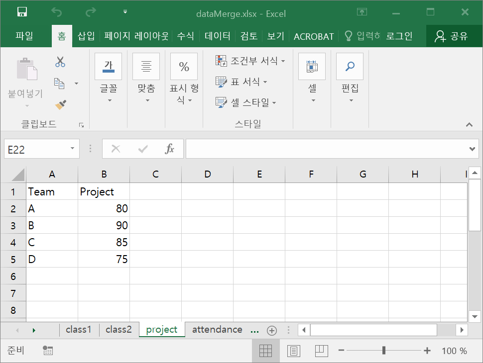
readxl은 tidyverse 패키지가 적재될 때 자동으로 적재되지는 않으므로, 직접 적재를 해야 한다.
readxl은 Excel 파일을 읽어들이는 다음 세 함수를 제공한다.
read_xls():xls형식의 Excel 파일을 읽어들인다.read_xlsx():xlsx형식의 Excel 파일을 읽어들인다.read_excel():xls와 xlsx` 형식의 Excel 파일을 모두 읽어들인다.
이 함수들은 read_csv()와 공유하는 인수들이 있다.
대표적인 예로 col_names, col_types, na, skip 등이 있다.
여기서는 read_excel() 함수만 다루도록 한다.
워크시트의 데이터 읽기
한 파일에 여러 워크시트를 저장할 수 있는 것이 Excel 파일과 텍스트 파일의 가장 큰 차이라 할 수 있다.
그렇기 때문에 read_excel()함수는 첫 번째 인수로 파일명을, 두 번째sheet인수로 읽어들일 워크시트를 지정한다.read_excel()함수는 데이터를tibble`이라는 일종의 개량된 data.frame 형식으로 데이터를 반환한다.
# A tibble: 4 × 2
Team Project
<chr> <dbl>
1 A 80
2 B 90
3 C 85
4 D 75sheet 인수에 아무것도 지정하지 않으면, 맨 처음 워크시트의 데이터를 읽어들인다.
# A tibble: 5 × 6
ID Name Adress Midterm Final Team
<chr> <chr> <chr> <dbl> <dbl> <chr>
1 015 김철수 서울 78 59 A
2 018 김영희 경기 85 87 A
3 025 이철수 충남 80 70 B
4 034 이영희 대전 92 89 B
5 151 홍길동 세종 58 66 B Excel 파일에 있는 모든 워크시트 정보를 확인하려면 excel_sheets() 함수를 사용한다.
[1] "class1" "class2" "project" "attendance"워크시트의 특정 범위의 데이터 읽기
다음은 제공된 Excel 파일의 4 번째 워크시트를 보여준다.
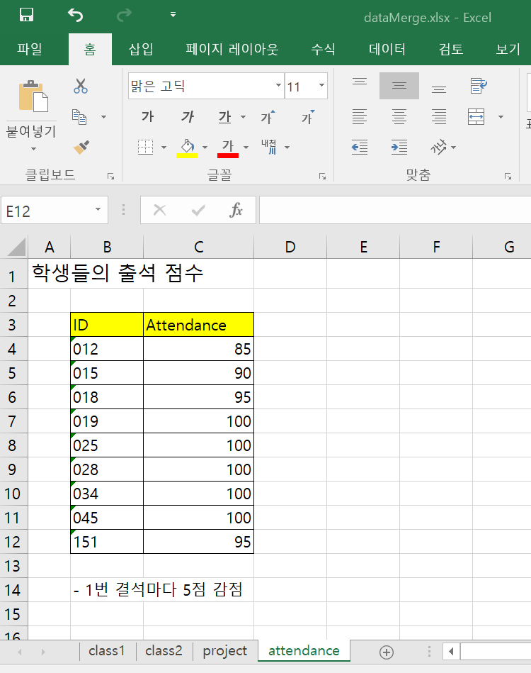
지금까지의 워크시트는 데이터가 모두 좌상단부터 시작하고, 열 이름과 데이터를 제외하고는 다른 정보가 저장되어 있지 않았다.
그러나 대부분의 워크시트는 데이터 저장의 용도뿐 아니라 문서로서 역할도 하기 때문에 위의 그림처럼 데이터와 무관한 내용들이 있을 수 있다.
이런 경우에는 워크시트의 특정 범위를 지정하여 데이터를 읽어와야 한다.
read_excel()의 range 인수는 Excel의 범위 지정 문법을 사용하여 특정 범위를 지정한다.
# A tibble: 9 × 2
ID Attendance
<chr> <dbl>
1 012 85
2 015 90
3 018 95
4 019 100
5 025 100
6 028 100
7 034 100
8 045 100
9 151 95다음처럼 range에 워크시트가 포함된 범위를 지정하면 sheet 인수는 무시되므로 이를 지정하지 않는다.
# A tibble: 9 × 2
ID Attendance
<chr> <dbl>
1 012 85
2 015 90
3 018 95
4 019 100
5 025 100
6 028 100
7 034 100
8 045 100
9 151 95자료형에 대한 주의 사항
CSV 파일은 모든 데이터가 단순한 텍스트로 저장되지만, Excel 파일은 그렇지 않다. Excel 파일의 데이터를 읽어들일 때 다음 세 가지 사항을 주의해야 한다.
Excel은 실제 자료형과 표현되는 형태가 다를 수 있다. Excel에는 정수형이 없다. 숫자는 모두 부동소수점의 자료형이다. 단지 소수점 몇 째 자리까지 표현할지에 따라 Excel에서 보여지는 숫자 형식이 달라질 뿐이다. 날짜와 시간도 1970년 1월 1일 이후의 경과된 초를 기준으로 숫자로 저장된다. 단지 표현될 때 날짜 형식으로 보여질 뿐이다. 그러므로 Excel에서 보여지는 형식과 다르게 R에서 읽혀질 수 있다는 것을 이해해야 한다.
read_excel()함수는 각 열의 데이터로 R에서 적절한 자료형으로 추정하지만 이러한 추정이 만족스럽지 않으면col_types인수에 자료형을 적절히 지정해 주어야 한다. 관련된 내용은read_excel()함수의 도움말을 참조한다.Excel은 셀별로 데이터 형식을 지정한다는 것이다. 그러므로 한 열이 여러 데이터가 혼합된 형태일 수 있다. 만약에 혼합된 형식의 데이터를 모두 이용하려면 열의 자료형을
"list"로 설정한다.Excel의 셀은 배경색, 텍스트의 서식 등의 다양한 정보를 가지고 있다. 이는 시트의 데이터를 사람에게 보기 좋은 문서로서 표현한 것이지만, 컴퓨터가 처리하기에 적절한 데이터 저장 방식은 아니다. 또한 피벗 테이블처럼 복잡한 형식으로 데이터가 저장되어 있을 수도 있다. 만약 Excel 파일에 표현된 이러한 정보가 데이터 분석에 필요하다면,
tidyxl패키지의 기능을 검토해 볼 필요가 있다.
12.2.1.1 데이터를 Excel 파일에 쓰기
Excel 파일에 데이터를 저장하려면 writexl 패키지가 필요하다.
write_xlsx() 파일은 R의 데이터프레임(들)을 xlsx 형식의 Excel 파일에 저장한다.
- 첫 번째 인수에 데이터프레임 또는 데이터프레임을 요소로 하는 리스트를 제공한다. 리스트로 제공하는 경우 요소의 이름이 워크시트의 이름이 된다.
path인수는 저장될 파일의 경로를 지정한다. 파일명만 지정하면 작업 디렉토리에 저장된다.col_names인수는 열 이름을 저장할지를 지정한다. 디폴트 값은TRUE이다.format_headers인수는 열 이름을 가운데 정렬하고 굵은 글자로 표시할지를 지정한다. 디폴트 값은TRUE이다.
다음은 데이터프레임 하나만 제공하는 경우이다. 보통의 Excel 파일처럼 Sheet1라는 이름의 워크시트에 데이터가 저장된다.
library(writexl)
write_xlsx(students_all, path="students_all.xlsx")
excel_sheets("students_all.xlsx")[1] "Sheet1"다음처럼 요소에 이름을 부여한 리스트를 인수로 제공하면 요소 이름을 워크시트 이름으로 하여 데이터가 저장된다.
write_xlsx(
list(students=students_all, project=project, attendance=att),
path="students_all.xlsx"
)
excel_sheets("students_all.xlsx")[1] "students" "project" "attendance"writexl 패키지는 Excel 파일에 데이터를 저장하는 기능만을 제공한다. 만약 Excel 파일에 데이터와 함께 다양한 스타일을 같이 지정하고자 하면 openxlsx 패키지를 참고하지 바란다.
12.2.2 Google Sheets에서 데이터 읽기
Google Sheets에서 데이터를 읽어오는 방식은 Excel에서 데이터를 읽어오는 것과 유사하다. 그러나 Excel은 기본적으로 PC 환경의 SW이고 Google Sheets는 인터넷 환경에서의 서비스이기 때문에 차이점이 존재한다.
googlesheets4 패키지
Google Sheets에서 데이터를 읽고 쓰려면 googlesheets4 패키지가 필요하다.
이 패키지는 Google Sheets API v4의 R 인터페이스를 제공한다.
googlesheet4 패키지는 다음의 두 패키지에 의존하고 있다.
gargle패키지: 250 여개의 Google API의 공통 기능에 대한 R 인터페이스를 제공한다.googlesheets4에서는 Oauth 등의 기능을 사용한다.googledirve패키지: Google Drive API와 관련된 R 인터페이스를 제공한다.
이 패키지는 tidyverse 패키지를 설치하였으면 설치가 되어 있을 것이다.
그렇지 않다면 다음 명령으로 설치를 한다.
워크시트 읽기
googlesheets4로 Google Sheets의 시트에 접근하려면 디폴트로 사용자 인증을 진행한다.
만약 공개되어 있는 시트를 읽는 경우에는 Oauth를 사용하여 인증 과정을 거치지 않아도 된다.
R에서 불필요한 인증을 하지 않으려면 먼저 gs4_deauth() 함수를 호출한다.
Gapminder에서 제공하는 기대 수명과 1인당 GDP 데이터에 접근해 보자.
read_sheet() 함수는 Google Sheets 문서에서 데이터를 읽어들인다.
read_sheet()는 range_read()라고도 불리는데 두 함수는 동일한 함수이다.
ss인수는 첫 번째 인수로 Google Sheets 문서를 지정한다. URL, ID 등을 입력받는다.sheet인수는 읽을 워크시트를 지정한다. 이름, 위치 등으로 지정한다.range인수에 워크시트가 지정되면 이 인수는 무시된다. 디폴트값은 문서의 첫 시트이다.range인수는 Excel과 마찬가지로 셀 범위로 워크시트에서 읽어들일 데이터 범위를 지정한다. 디폴트 값은 비어있지 않은 모든 셀을 읽어들인다.read_csv()와read_excel()처럼col_names,col_types,na,skip등의 인수를 가지고 있다. 자세한 정보는read_sheet()에 대한 도움말을 참조한다.
url <- "https://docs.google.com/spreadsheets/d/1U6Cf_qEOhiR9AZqTqS3mbMF3zt2db48ZP5v3rkrAEJY/"
life_exp_africa <- read_sheet(url)✔ Reading from "gapminder".✔ Range 'Africa'.# A tibble: 624 × 6
country continent year lifeExp pop gdpPercap
<chr> <chr> <dbl> <dbl> <dbl> <dbl>
1 Algeria Africa 1952 43.1 9279525 2449.
2 Algeria Africa 1957 45.7 10270856 3014.
3 Algeria Africa 1962 48.3 11000948 2551.
4 Algeria Africa 1967 51.4 12760499 3247.
5 Algeria Africa 1972 54.5 14760787 4183.
6 Algeria Africa 1977 58.0 17152804 4910.
7 Algeria Africa 1982 61.4 20033753 5745.
8 Algeria Africa 1987 65.8 23254956 5681.
9 Algeria Africa 1992 67.7 26298373 5023.
10 Algeria Africa 1997 69.2 29072015 4797.
# ℹ 614 more rowssheet 인수를 지정하지 않았기 때문에 첫 번째 워크시트인 Africa 지역의 나라들의 기대수명(lifeExp)과 일인당GDP(gdpPercap) 등을 제공한다.
Google Sheets 문서의 URL은 다음의 구조로 되어 있다.
https://docs.google.com/spreadsheets/d/문서ID/edit#gid=워크시트ID그러므로 다음처럼 URL을 참조하여 문서 ID로 데이터를 읽어올 수도 있다.
sheet_id <- "1U6Cf_qEOhiR9AZqTqS3mbMF3zt2db48ZP5v3rkrAEJY"
life_exp_asia <- read_sheet(sheet_id, sheet="Asia")✔ Reading from "gapminder".✔ Range ''Asia''.# A tibble: 396 × 6
country continent year lifeExp pop gdpPercap
<chr> <chr> <dbl> <dbl> <dbl> <dbl>
1 Afghanistan Asia 1952 28.8 8425333 779.
2 Afghanistan Asia 1957 30.3 9240934 821.
3 Afghanistan Asia 1962 32.0 10267083 853.
4 Afghanistan Asia 1967 34.0 11537966 836.
5 Afghanistan Asia 1972 36.1 13079460 740.
6 Afghanistan Asia 1977 38.4 14880372 786.
7 Afghanistan Asia 1982 39.9 12881816 978.
8 Afghanistan Asia 1987 40.8 13867957 852.
9 Afghanistan Asia 1992 41.7 16317921 649.
10 Afghanistan Asia 1997 41.8 22227415 635.
# ℹ 386 more rowsGoogle Sheets에 대한 메타정보를 확인하려면 gs4_get() 함수를 사용한다.
이 함수는 Google Sheets 문서에 대한 정보, 워크시트에 대한 정보, 그리고 이름이 부여된 범위에 대한 정보를 제공한다.
── <googlesheets4_spreadsheet> ─────────────────────────────────────────────────
Spreadsheet name: "gapminder"
ID: 1U6Cf_qEOhiR9AZqTqS3mbMF3zt2db48ZP5v3rkrAEJY
Locale: en_US
Time zone: America/Los_Angeles
# of sheets: 5
# of named ranges: 1
── <sheets> ────────────────────────────────────────────────────────────────────
(Sheet name): (Nominal extent in rows x columns)
'Africa': 625 x 6
'Americas': 301 x 6
'Asia': 397 x 6
'Europe': 361 x 6
'Oceania': 25 x 6
── <named ranges> ──────────────────────────────────────────────────────────────
(Named range): (A1 range)
'canada': 'Americas'!A38:F49Google Sheets의 모든 워크시트의 이름만 확인하려면 sheet_names() 함수를 사용한다.
[1] "Africa" "Americas" "Asia" "Europe" "Oceania" sheet_properties() 함수를 사용하면 모든 워크시트의 속성을 확인할 수 있다.
# A tibble: 5 × 8
name index id type visible grid_rows grid_columns data
<chr> <int> <int> <chr> <lgl> <int> <int> <list>
1 Africa 0 780868077 GRID TRUE 625 6 <NULL>
2 Americas 1 45759261 GRID TRUE 301 6 <NULL>
3 Asia 2 1984823455 GRID TRUE 397 6 <NULL>
4 Europe 3 1503562052 GRID TRUE 361 6 <NULL>
5 Oceania 4 1796776040 GRID TRUE 25 6 <NULL>gs4_get() 함수 결과에서 보듯이 Gapmider의 문서에는 "canada"라는 이름으로 정의되어 있는 범위가 존재한다.
이 범위는 캐나다와 관련 데이터의 셀 범위를 가리키고 있다.
문서에 이미 정의된 범위는 range 인수에 해당 이름을 지정하여 가져올 수 있다.
이 범위에는 열 이름을 나타내는 머리행이 없으므로, col_names 인수에 열 이름을 지정해야 한다.
✔ Reading from "gapminder".✔ Range 'canada'.# A tibble: 12 × 6
country continent year lifeExp pop gdpPercap
<chr> <chr> <dbl> <dbl> <dbl> <dbl>
1 Canada Americas 1952 68.8 14785584 11367.
2 Canada Americas 1957 70.0 17010154 12490.
3 Canada Americas 1962 71.3 18985849 13462.
4 Canada Americas 1967 72.1 20819767 16077.
5 Canada Americas 1972 72.9 22284500 18971.
6 Canada Americas 1977 74.2 23796400 22091.
7 Canada Americas 1982 75.8 25201900 22899.
8 Canada Americas 1987 76.9 26549700 26627.
9 Canada Americas 1992 78.0 28523502 26343.
10 Canada Americas 1997 78.6 30305843 28955.
11 Canada Americas 2002 79.8 31902268 33329.
12 Canada Americas 2007 80.7 33390141 36319.Gapminder의 문서는 모든 워크시트가 동일한 구조로 되어 있다. 그러므로 하나의 데이터로 모두 통합할 수 있다.
다음은 sheet_names()로 모든 워크시트의 이름 받은 후, 차례대로 워크시트를 읽어와 하나의 데이터프레임으로 병합한 예이다.
life_exp_all <- sheet_names(sheet_id) %>%
lapply(function(sheet) read_sheet(sheet_id, sheet=sheet)) %>%
bind_rows()✔ Reading from "gapminder".✔ Range ''Africa''.✔ Reading from "gapminder".✔ Range ''Americas''.✔ Reading from "gapminder".✔ Range ''Asia''.✔ Reading from "gapminder".✔ Range ''Europe''.✔ Reading from "gapminder".✔ Range ''Oceania''.# A tibble: 1,704 × 6
country continent year lifeExp pop gdpPercap
<chr> <chr> <dbl> <dbl> <dbl> <dbl>
1 Algeria Africa 1952 43.1 9279525 2449.
2 Algeria Africa 1957 45.7 10270856 3014.
3 Algeria Africa 1962 48.3 11000948 2551.
4 Algeria Africa 1967 51.4 12760499 3247.
5 Algeria Africa 1972 54.5 14760787 4183.
6 Algeria Africa 1977 58.0 17152804 4910.
7 Algeria Africa 1982 61.4 20033753 5745.
8 Algeria Africa 1987 65.8 23254956 5681.
9 Algeria Africa 1992 67.7 26298373 5023.
10 Algeria Africa 1997 69.2 29072015 4797.
# ℹ 1,694 more rows이 데이터에서 2007 년도 데이터만 추출하여 일인당GDP, 기대수명, 인구수(pop)을 이용하여 버블 차트를 그려보자. 대륙별로 다른 색상의 버블이 되도록 하였고, 일인당GDP는 로그 스케일로 변환하였다.
filter(life_exp_all, year==2007) %>%
ggplot(aes(gdpPercap, lifeExp)) +
geom_point(aes(size=pop, color=continent)) +
geom_text(aes(label=country), size=2, nudge_y=1, check_overlap=T) +
scale_x_continuous(trans="log10") +
labs(x="일인당 GDP", y="기대수명", size="인구", color="대륙") +
theme_bw()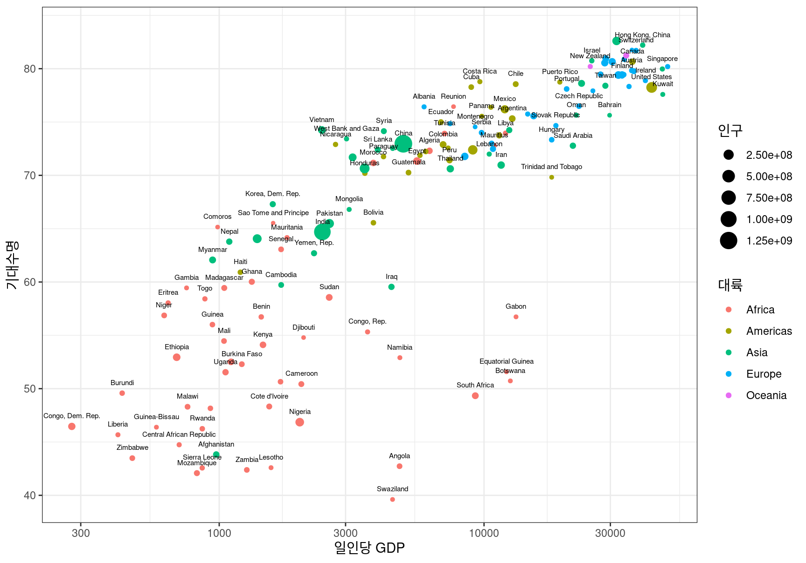
마지막으로 한국 데이터만 필터링 하여 시간에 따라 어떻게 변화하였는지를 시각화해 보자.
# A tibble: 12 × 6
country continent year lifeExp pop gdpPercap
<chr> <chr> <dbl> <dbl> <dbl> <dbl>
1 Korea, Rep. Asia 1952 47.5 20947571 1031.
2 Korea, Rep. Asia 1957 52.7 22611552 1488.
3 Korea, Rep. Asia 1962 55.3 26420307 1536.
4 Korea, Rep. Asia 1967 57.7 30131000 2029.
5 Korea, Rep. Asia 1972 62.6 33505000 3031.
6 Korea, Rep. Asia 1977 64.8 36436000 4657.
7 Korea, Rep. Asia 1982 67.1 39326000 5623.
8 Korea, Rep. Asia 1987 69.8 41622000 8533.
9 Korea, Rep. Asia 1992 72.2 43805450 12104.
10 Korea, Rep. Asia 1997 74.6 46173816 15994.
11 Korea, Rep. Asia 2002 77.0 47969150 19234.
12 Korea, Rep. Asia 2007 78.6 49044790 23348.ggplot(life_exp_korea, aes(gdpPercap, lifeExp)) +
geom_line(aes(color=year)) +
geom_point(aes(size=pop, color=year)) +
labs(x="일인당 GDP", y="기대수명", size="인구", color="조사년도") +
theme_bw()
Google Sheets에 데이터 쓰기
Google Sheets 문서에 데이터를 쓰려면 인증 절차를 거쳐야 한다.
gs4_auth()함수를 사용하여 인증을 시작한다.
! Using an auto-discovered, cached token. To suppress this message, modify your code or options to clearly consent to
the use of a cached token. See gargle's "Non-interactive auth" vignette for more details: <https://gargle.r-lib.org/articles/non-interactive-auth.html>ℹ The googlesheets4 package is using a cached token for 'mgmthw@gmail.com'.gs4_auth()를 실행하면 다음과 같은 메시지가 출력된다. (메시지는 버전에 따라 조금씩 다를 수 있다.) OAuth 인증을 캐시 폴더에 저장하여 다음 번 실행 시에는 인증을 생략할지를 묻는 질문이다.
Is it OK to cache OAuth access credentials in the folder ~/.cache/gargle between R sessions?
1: Yes
2: No
Selection:Selection:에 1을 입력하여 저장하든지, 2를 입력하여 항상 인증을 할지를 결정한다.
사용할 Google 계정을 선택하거나 아직 로그인이 되어 있지 않으면 Google 이메일 계정과 암호를 입력하여 인증을 진행한다. 이 과정은 Google에서 직접 수행되는 것으로 R에는 관련 정보가 저장되지 않는다. 로그인된 Google 계정이 오직 하나이면 이 과정은 생략될 수 있다.
Tidyverse API Packages 서비스 로그인이 내 계정에 접근할 수 있는 권한을 줄 것인지를 묻는다.계속을 클릭하여 진행한다.Tidyverse API Packages가 내 계정의 Google Sheets의 문서를 수정하고 생성할 권한을 줄지를 묻는다.write_sheet()함수가 여러분의 계정에 워크시트를 생성하거나 수정하려면 이 권한을 부여하여야 한다. 체크박스를 체크한 후계속을 클릭한다.그러면 인증이 끝났고 R로 돌아가라는 안내 페이지가 나타난다.
write_sheet() 함수는 데이터프레임의 데이터를 새로운 Google Sheets 문서의 워크시트에 저장하거나 기존의 워크시트의 내용을 덮어쓰기한다. sheet_write() 함수라고도 한다. 두 함수는 동일한 함수이다.
data인수: 첫 번째 인수로 저장할 데이터프레임이 지정된다.ss인수: Google Sheets 문서의 URL이나 문서 ID 등이 지정된다. 디폴트 값은NULL로 임의로 파일 이름으로 데이터를 저장한 새로운 Google Sheets 문서가 생성된다.
sheet인수: Google Sheets 문서의 어느 워크시트에 데이터를 저장할지 지정한다. 워크시트의 이름이나 위치로 지정한다.
write_sheet() 함수는 자신이 데이터를 저장한 문서의 ID를 반환한다.
Gapmider의 데이터 중에서 한국 데이터만 새로운 Google Sheets 문서에 저장해보자.
가장 단순한 방법은 임의의 이름으로 새로운 Google Sheets 문서를 만들어 저장하는 것이다.
✔ Creating new Sheet: "jovial-seagull".저장된 문서의 메타정보를 확인해 보자.
── <googlesheets4_spreadsheet> ─────────────────────────────────────────────────
Spreadsheet name: "jovial-seagull"
ID: 1QtFJ9asNhXoZGHZ5txBpyeR_H-zvEAOv8c0hFAb-hm0
Locale: ko_KR
Time zone: Etc/GMT
# of sheets: 1
── <sheets> ────────────────────────────────────────────────────────────────────
(Sheet name): (Nominal extent in rows x columns)
'life_exp_korea': 13 x 6임의의 문서 이름이 부여되어 있고, 워크시트의 이름으로 데이터프레임의 변수명이 사용되었음을 볼 수 있다. 여러분의 구글 드라이브에 가보면 이 Google Sheets 문서를 확인할 수 있다. 여기서는 워크시트를 읽어서 데이터가 제대로 저장되었는지 확인해 보자.
✔ Reading from "jovial-seagull".✔ Range 'life_exp_korea'.# A tibble: 12 × 6
country continent year lifeExp pop gdpPercap
<chr> <chr> <dbl> <dbl> <dbl> <dbl>
1 Korea, Rep. Asia 1952 47.5 20947571 1031.
2 Korea, Rep. Asia 1957 52.7 22611552 1488.
3 Korea, Rep. Asia 1962 55.3 26420307 1536.
4 Korea, Rep. Asia 1967 57.7 30131000 2029.
5 Korea, Rep. Asia 1972 62.6 33505000 3031.
6 Korea, Rep. Asia 1977 64.8 36436000 4657.
7 Korea, Rep. Asia 1982 67.1 39326000 5623.
8 Korea, Rep. Asia 1987 69.8 41622000 8533.
9 Korea, Rep. Asia 1992 72.2 43805450 12104.
10 Korea, Rep. Asia 1997 74.6 46173816 15994.
11 Korea, Rep. Asia 2002 77.0 47969150 19234.
12 Korea, Rep. Asia 2007 78.6 49044790 23348.임의의 문서명과 워크시트명이 아니라 원하는 이름으로 Google Sheets 문서를 만드려면 gs4_create() 함수를 사용한다.
name 인수에 문서명을 sheets 인수에 워크시트명을 지정한다.
(워크시트의 이름을 지정하는 인수가 지금까지 사용했던 sheet가 아니라 sheets임에 주의한다. 여러 워크시트 명을 전달할 수 있기 때문에 복수형으로 인수 이름이 지어졌다.)
✔ Creating new Sheet: "기대수명".새로 만들어진 문서에 한국 데이터를 저장해 보자.
✔ Writing to "기대수명".✔ Writing to sheet 'Korea'.이 외에도 워크시트에 행을 추가하거나 복사할 수 있으며, 워크시트와 범위를 지우는 등의 다양한 작업을 할 수 있다.
관련된 내용은 도움말이나 googlesheets4 문서를 참조한다.
12.4 웹 스크래핑 (web scrapping): 웹 사이트에서 데이터 가져오기
웹 스크래핑은 웹 페이지에서 필요한 정보를 추출하는 것을 의미한다. 일부 웹 사이트는 공개 API(Application Programming Interface)를 이용하여 웹 사이트의 데이터를 JSON이나 XML 등의 구조화된 형식으로 제공하기도 한다. 공개 API를 사용하여 웹 사이트에서 정보를 획득하는 방법은 12.5 절에서 다룰 것이다. 그러나 대부분의 웹 사이트는 별도의 API를 제공하지 않으므로 웹 페이지에 나타난 정보를 웹 스크래핑 방법을 사용하여 직접 추출해야 한다.
웹 스크래핑 시 주의 사항
타인의 웹 사이트에서 데이터를 수집하는 행위는 윤리적, 법적 문제를 만들 수 있다. 공개되어 있고, 개인정보가 아니고, 사실과 관련된 데이터를 수집하는 것은 일반적으로 법적 문제에 결부될 확률을 낮춘다. 특히 학술, 비영리적 목적으로 위와 같은 정보를 수집하는 것은 대부분 법적인 문제의 소지가 낮다. 그러나 이는 어디까지나 일반적인 지침이지 확립된 규칙은 아니다. 만약 데이터 수집이 법적, 윤리적 문제를 발생시킬 가능성이 있다고 판단된다면 전문가의 확인을 받는 것이 좋다. 특히 공개되지 않고 로그인이 필요한 서비스에서의 데이터 수집이나, 개인정보가 포함된 정보의 수집, 저작권에 위배될 만한 수준의 정보의 수집하여 이용하고자 할 때는, 사이트의 운영 방침 등을 확인하는 것이 좋다.
또한 웹 스크래핑을 할 때 웹 사이트의 운영에 최대한 피해를 주지 않아야 한다. 다량의 웹 페이지에서 데이터를 수집하는 것은 웹 사이트에 많은 부하를 줄 수 있다. 그러므로 연속적으로 여러 웹 페이지에서 데이터를 수집할 때는, 수집 사이에 일정한 시간 간격으로 수집을 중지하는 시간이 필요하다.
rvest 패키지
rvest 패키지는 웹페이지에서 데이터를 스크래핑하게 도와준다.
tidyverse 패키지를 설치하였으면 이 패키지가 이미 설치되었을 것이다.
만약 설치되어 있지 않다면 다음 명령으로 설치를 한다.
rvest 패키지는 tidyverse의 핵심 패키지가 아니므로 tidyverse 패키지와는 별도로 메모리에 적재해야 한다.
다음의 패키지를 부착합니다: 'rvest'The following object is masked from 'package:readr':
guess_encodingHTML 기초
모든 웹 페이지는 HTML(HyperText Markup Language)이라는 언어로 만들어진다. 다음은 매우 단순한 웹 페이지를 표현하는 HTML 문서를 보여준다.
<!DOCTYPE html>
<html>
<head>
<title>초간단 웹페이지</title>
</head>
<body>
<h1 id="first">단순한 웹 페이지</h1>
<p class="plain">
요즘에는 이렇게 간단한 웹 페이지는 <b>실습</b> 아니면 만들지 않는다.
다음 그림은 <i>Copilot</i>에서 생성한 <b>HTML</b> 관련 이미지이다.
</p>
<img src="img/html.png" width=300 height=250>
</body>
</html>이 HTML 문서로 구현된 웹 페이지를 확인하려면 링크를 클릭한다.
HTML 문서는 다음 구조를 가진다.
- HTML 문서는 태그(tags) 또는 요소(elements) 또는 노드(nodes)들로 계층적으로 구성된다.
- 태그는
<태그명>으로 시작하여<\태그명>으로 끝난다.- 위의 예에서 최상위 요소는
<html>요소이다. <html>요소는<head>와<body>라는 두 자식 요소(하위 요소)를 가진다.<head>요소는 HTML 문서에 대한 메타정보를 저장한다. 대표적인 예가 브라우저 상단에 표시되는 웹 문서의 제목과 동적인 웹 문서를 만들기 위해서 사용되는 자바스크립트 등이 포함된다.<body>요소에는 웹 브라우저에서 표현되는 컨텐츠들이 포함된다.
- 위의 예에서 최상위 요소는
<body>요소 아래에는 웹 문서에 볼 수 있는 다양한 블록 요소들이 정의된다.- 위의 예에서는
<body>요소는 제목을 나타내는<h1>요소, 문단을 나타내는<p>요소를 자식 요소로 포함한다. - 블록 요소 아래에 또 다른 블록 요소들이 포함될 수 있으며,
<b>,<i>,<a>처럼 텍스트의 형식을 등을 지정하는 인라인(inline) 요소들도 포함될 수 있다. - 블록 요소들은 새로운 블록이 시작될 때 새로운 줄에서 시작되지만 인라인 요소들은 줄바꿈 되지 않는다.
- 위의 예에서는
- 태그들은 태그의 시작과 끝 사이에 텍스트 등의 컨텐츠를 포함할 수 있다.
- 태그에는 속성(attributes)가 정의될 수 있다.
- 속성은 시작 태그에
속성이름=속성값의 형식으로 정의된다. - 위의 예에서는
<h1>태그에id라는 속성이,<img>태그에src등의 속성이 정의되어 있다.
- 속성은 시작 태그에
id와class속성은 매우 중요한 속성인데, 웹 페이지의 스타일을 지정하는 CSS(Cascading Style Sheets)를 사용하여 특정id와class의 요소의 스타일을 지정할 수 있기 때문이다.id속성은 요소에 유일한 값이 지정된다. 모든 요소에id속성이 지정되는 것은 아니다.class속성은 동일한 종류의 스타일을 공유하는 여러 요소들에게 같은 값이 지정된다. 모든 요소에class속성이 지정되는 것은 아니다.
HTML 문서 가져오기
rvest 패키지의 read_html() 함수는 웹 페이지를 R로 가져온다.
첫 번째 인수로 웹 페이지의 유일한 주소인 URL을 지정해 준다.
URL은 웹 브라우저의 주소창에 나타나는 문자열이다.
앞의 단순한 웹 페이지의 URL로 페이지를 가져오자.
{html_document}
<html>
[1] <head>\n<meta http-equiv="Content-Type" content="text/html; charset=UTF-8 ...
[2] <body>\r\n <h1 id="first">단순한 웹 페이지</h1>\r\n <p class="plain">\r\n ...read_html() 함수는 xml_document 객체로 HTML 문서의 정보를 반환한다. xml_document 클래스는 rvest가 의존하고 있는 xml2 패키지에 정의된 자료형이다.
반환된 정보에서 <html> 요소가 이 문서의 최상위 요소임을 보여준다.
그리고 그 아래 두 요소가 있고 각각 <head>와 <body> 요소라는 것을 보여준다.
HTML 요소 찾기
일반적으로 HTML 문서는 매우 복잡한 계층 구조를 가지고 있으므로 내가 원하는 정보를 가지고 있는 요소만 뽑아내는 것이 쉽지 않다. 웹 스크래핑에서는 특정한 요소를 지정하기 위하여 CSS 선택자(selectors)를 사용한다. CSS 선택자는 원래 웹 페이지의 특정 요소를 지정하여 특정한 스타일을 적용하기 위해 사용된다. 매우 정밀하게 페이지 내의 요소를 정의해야 하기 때문에 CSS 선택자를 잘 사용하면 대부분의 경우 내가 원하는 요소를 정확하게 지정할 수 있다.
CSS 선택자는 핵심적으로 다음 세 가지 방식으로 특정한 요소를 지정한다.
태그명으로 요소 지정: 예를 들어p는<p>요소를 지정하기 위하여.클래스명으로 요소 지정: 예를 들어.plain는class=plain속성을 가진 모든 요소를 지정하기 위하여 사용된다.#ID로 요소 지정: 예를 들어#first는id=first속성을 가진 요소를 지정하기 위하여 사용된다.
CSS 선택자는 이 세가지 방식을 자유롭게 조합하여 정밀하게 특정한 요소를 지정할 수 있다. 이에 대해서는 나중에 논의하기로 한다.
html_elements()는 CSS 선택자와 매칭되는 모든 요소를 반환한다.
다음은 최상위의 <html> 요소 아래에 있는 모든 <p> 요소를 찾는 예이다.
{xml_nodeset (1)}
[1] <p class="plain">\r\n 요즘에는 이렇게 간단한 웹 페이지는 <b>실습</b> 아니면 만들지 않는다.\r\n ...다음은 최상위의 <html> 요소 아래에 있는 모든 <b> 요소를 찾는 예이다.
{xml_nodeset (2)}
[1] <b>실습</b>
[2] <b>HTML</b>이번에는 class 속성이 "plain"인 모든 요소를 찾는 예이다.
{xml_nodeset (1)}
[1] <p class="plain">\r\n 요즘에는 이렇게 간단한 웹 페이지는 <b>실습</b> 아니면 만들지 않는다.\r\n ...마지막으로 id 속성이 "first"인 모든 요소를 찾는 예이다.
{xml_nodeset (1)}
[1] <h1 id="first">단순한 웹 페이지</h1>html_elements()와는 조금 다른 기능을 하는 html_element()라는 함수도 있다. (복수를 의미하는 s가 없다.)
이 함수는 최상위 노드에서 매칭되는 요소를 오직 하나만 반환한다.
만약 매칭되는 요소가 여러 개가 있으면 첫 번째로 매칭되는 요소를 반환한다.
{html_node}
<b>만약 최상위 요소가 여러 개이면 html_element()는 입력된 최상위 요소별로 매칭되는 하나의 요소를 반환하다.
만약 매칭되는 요소가 없으면 NA라는 결측치를 반환한다.
다음은 단순한 웹 페이지에는 포함되지 않은 순서 없는 목록을 나타내는 <ul> 요소를 html_element()로 찾는 예이다.
{xml_missing}
<NA>html_elements()는 어떠한 요소도 매칭이 되지 않으면 무엇을 반환할까?
{xml_nodeset (0)}해당되는 요소가 없으면 html_elements() 함수는 길이가 0인 벡터를 반환한다.
두 함수의 이러한 차이는 여러 요소에서 데이터를 추출할 때 매우 중요한 차이를 만든다.
이 두 함수의 쓰임새의 차이를 확인하기 위하여 다음 예를 살펴보자.
<!DOCTYPE html>
<html>
<head>
<title>목록 웹페이지</title>
<link href="css/scrap.css" rel="stylesheet" type="text/css"/>
</head>
<body>
<h1>목록이 있는 웹페이지</h1>
<p>다음은 최근 대한민국의 4 명의 대통령에 대한 목록이다.</p>
<ul>
<li><b>이명박</b> <i>17대</i> 대통령의 재임기간은 <span class="period">1827일</span>이다.</li>
<li><b>박근혜</b> <i>18대</i> 대통령의 재임기간은 <span class="period">1475일</span>이다.</li>
<li><b>문재인</b> <i>19대</i> 대통령의 재임기간은 <span class="period">1827일</span>이다.</li>
<li><b>윤석열</b> <i>20대</i> 대통령은 현재 재임 중이다.</li>
</ul>
</body>
</html>이 HTML 문서로 구현된 웹 페이지를 확인하려면 링크를 클릭한다.
이 웹 페이지는 목록을 가지고 있고 목록의 내용 중 class=period인 요소에 다음과 같은 CSS 스타일이 적용되어 있다.
.period {
color: purple;
background-color: lightyellow;
}먼저 이 웹 페이지를 가져온 후 목록의 항목을 나타내는 <li> 요소를 모두 추출해 보자.
html <- read_html("http://scrap-examples.netlify.app/list.html")
presidents <- html %>% html_elements("li")
presidents{xml_nodeset (4)}
[1] <li>\n<b>이명박</b> <i>17대</i> 대통령의 재임기간은 <span class="period">1827일</span>이 ...
[2] <li>\n<b>박근혜</b> <i>18대</i> 대통령의 재임기간은 <span class="period">1475일</span>이 ...
[3] <li>\n<b>문재인</b> <i>19대</i> 대통령의 재임기간은 <span class="period">1827일</span>이 ...
[4] <li>\n<b>윤석렬</b> <i>20대</i> 대통령은 현재 재임 중이다.</li>목록 항목에서 대통령의 이름을 추출해 보자.
항목이 여러 개이고 항목별로 대통령의 이름을 하나씩 추출해야 하므로 html_element() 함수의 사용이 적절하다.
{xml_nodeset (4)}
[1] <b>이명박</b>
[2] <b>박근혜</b>
[3] <b>문재인</b>
[4] <b>윤석렬</b>다음으로 대통령의 취임 순서와 재임기간 데이터를 추출해 보자.
{xml_nodeset (4)}
[1] <i>17대</i>
[2] <i>18대</i>
[3] <i>19대</i>
[4] <i>20대</i>{xml_nodeset (4)}
[1] <span class="period">1827일</span>
[2] <span class="period">1475일</span>
[3] <span class="period">1827일</span>
[4] NA현 대통령은 재임 중이므로 재임기간 정보가 없다. 그러므로 해당 요소가 없는 항목은 결측치(NA)로 처리되었다.
만약 이 경우에서 html_elements()를 사용하면 어떻게 될까?
{xml_nodeset (3)}
[1] <span class="period">1827일</span>
[2] <span class="period">1475일</span>
[3] <span class="period">1827일</span>위의 결과에서 보듯이 해당 요소가 없으면 추출되지 않는 것을 볼 수 있다. 만약 한 항목에 class=period인 요소가 2 개가 있었다면 이 두 요소가 모두 추출되었을 것이다.
그렇기 때문에 앞의 대통령의 이름과 취임순서와 개수와 순서가 맞지 않으므로 표 형식의 데이터로 정리하기 어려울 것이다.
그러므로 html_eleents()는 특정 조건에 맞는 모든 요소를 찾을 때 사용하고, html_element()는 추출된 최상위 요소에서 오직 한 개의 결과만을 얻고자 할 때 사용한다.
12.4.0.1 텍스트 추출과 처리
앞의 예에서 HTML에서 추출된 요소들은 HTML 태그를 포함하고 있다.
HTML 요소에서 태그를 제외하고 텍스트만 추출하고자 하면 html_text2() 함수를 사용한다.
html_text() 함수도 텍스트를 추출하지만, 이 함수는 태그 안의 텍스트를 그대로 추출하는 반면, html_text2()는 태그 안의 하위 태그들을 고려하여 적절한 텍스트 형식으로 변환하여 추출해 준다.
그렇기 때문에 html_text2()는 html_text()보다 처리시간이 더 길지만 일반적으로 사용자가 원하는 형태로 텍스트를 추출해 준다.
[1] "이명박" "박근혜" "문재인" "윤석렬"[1] "17대" "18대" "19대" "20대"[1] "1827일" "1475일" "1827일" NA 추출된 텍스트로 tibble 형식의 데이터프레임을 만들어 보자.
# A tibble: 4 × 3
name n period
<chr> <chr> <chr>
1 이명박 17대 1827일
2 박근혜 18대 1475일
3 문재인 19대 1827일
4 윤석렬 20대 <NA> 그런데 이 데이터는 취임순서와 재임기간이 모두 문자로 처리되어 있기 때문에, 수치로서 처리할 수 없으므로 평균 등을 구할 수 없다.
tidyverse에 포함되어 있는 readr 패키지는 문자열을 다양한 자료형으로 변환하는 함수를 가지고 있다.
12.1 절에서 파일을 읽을 때 열의 자료형을 지정하여 열의 데이터를 적절한 자료형으로 변환할 수 있다고 하였다.
사실 이 변환 작업에는 다음과 같은 함수들이 이용된다.
parse_number(): 텍스트에서 숫자만 추출하여 수치형으로 변환한다.parse_logical(): 텍스트를 논리값으로 변환한다.parse_factor(): 텍스트에서 유일한 값만 추출하여 요소(factors)로 변환한다.parse_date(), parse_time(), parse_datetime(): 텍스트를 날짜, 시간, 날짜와 시간 형식으로 변환한다. 텍스트에 표현된 날짜와 시간 형식을 지정할 수 있다.
[1] 17 18 19 20그러므로 다음처럼 텍스트를 수치로 변환하여 데이터프레임을 만들 수 있다.
df <- tibble(
name=name %>% html_text2(),
n=orders %>% html_text2() %>% parse_number(),
period=periods %>% html_text2() %>% parse_number()
)
df# A tibble: 4 × 3
name n period
<chr> <dbl> <dbl>
1 이명박 17 1827
2 박근혜 18 1475
3 문재인 19 1827
4 윤석렬 20 NA재임기간이 수치로 저장되었기 때문에 다음처럼 재임기간의 평균을 구할 수 있다.
[1] 1709.667복잡 선택자로 웹 문서에서 요소 지정하기
현실의 웹 문서는 지금까지 보았던 단순한 형식보다 훨씬 더 복잡하다. 동일한 태그, 클래스가 여러 군데에서 다른 의미로 사용될 수 있다. 그러므로 내가 원하는 정보만 정확하게 지정하는 것이 쉬운 일이 아니다.
복잡한 웹 문서에서 원하는 요소만 지정하려면 CSS 선택자에 대한 더 심화된 이해와 관련된 도구의 사용법을 학습하여야 한다.
지금까지 태그, .클래스, #ID 등의 기본 선택자를 사용하여 요소를 지정하는 방법을 살펴보았다.
이 외에도 요소를 지정하는 두 가지 기본 선택자가 더 있다.
[속성]선택자는 특정 속성이 있는 요소만 매칭한다.[속성=값]을 사용하여 특정 속성이 특정 값인 요소만 매칭한다.- 또는 특정 속성이 특정 값으로 시작하거나 특정 값을 포함하는 요소를 매칭할 수도 있다.
:의사클래스선택자는 특정 상태에 있는 요소만 매칭한다. 예를 들어 특정 태그 요소 중에 맨 처음인 요소, 맨 마지막 요소, 마우스가 머물러 있는 요소 등을 지정할 수 있다.
이러한 기본 선택자들은 공백 없이 결합되어 모든 조건을 만족하는 특정 요소를 선택할 수 있다.
예로, 태그.클래스, .클래스1.클래스2, 태그[속성], 태그:의사클래스 등의 결합이 있을 수 있다.
CSS 선택자는 태그, 클래스, ID, 속성, 의사클래스 등의 기본 선택자를 조합하여 원하는 요소를 매우 정교하게 지정하도록 구성할 수 있다.
- 그룹 선택자:
선택자1, 선택자2, ..., 선택자n- 나열된 선택자 중 하나 이상과 매칭되는 요소를 선택
- 자식 선택자:
부모선택자 > 자식선택자- 부모 선택자와 매칭되는 요소들의 자식 요소 중에서 자식선택자와 매칭되는 요소를 선택
- 부모 선택자와 매칭되는 요소들의 자식 요소 중에서 자식선택자와 매칭되는 요소를 선택
- 후손 선택자:
상위선택자 하위선택자- 상위선택자와 매칭되는 요소의 하위 요소 중에서서 하위선택자와 매칭되는 요소를 선택
- 상위선택자와 매칭되는 요소의 하위 요소 중에서서 하위선택자와 매칭되는 요소를 선택
- 인접 형제 선택자:
선택자1 + 선택자2- 선택자1과 매칭되는 요소와 동일 계층에 있는 다음 요소 중에서 선택자2를 만족하는 요소를 선택
- 일반 형제 선택자:
선택자1 ~ 선택자1- 선택자1과 매칭되는 요소와 동일 계층에 있는 형재 요소 중에서 선택자2를 만족하는 요소를 선택
다음 표는 다양한 기본 선택자와 조합 선택자를 보여준다.
| 선택자 | Desc |
|---|---|
| a | a 태그 요소를 추출 |
| div, a | div 태그와 a 태그 요소를 추출 |
| div a | div 태그 하위의 a 태그 요소를 추출 |
| div + a | div 태그 바로 다음에 나타나는 a 태그 요소를 추출 |
| .cls | 요소의 class 속성이 cls인 모든 요소를 추출 |
| .cls1.cls2 | 요소의 class 속성이 cls1과 cls2를 모두 가진 요소를 추출 |
| .cls1 .cls2 | class 속성이 cls1인 요소의 후손 중 class 속성이 cls2인 요소를 추출 |
#myid |
id 속성이 myid인 요소를 추출 |
| a.cls | a 태그 요소 중 class 속성이 cls인 모든 요소 추출 |
| a.cls1.cls2 | a 태그 요소 중 class 속성이 cls1과 cls2를 모두 가진 요소를 추출 |
| a.cls1.cls2 | a 태그 요소 중 class 속성이 cls1과 cls2를 모두 가진 요소를 추출 |
CSS 선택자에 대한 자세한 설명은 CSS 기초를 다루는 MDN 사이트를 참조하기 바란다.
복잡한 웹 문서에서 내가 원하는 요소의 CSS 선택자를 탐색할 때 사용할 수 있는 유용한 도구가 두 가지가 있다.
- Chrome 브라우저의
검사메뉴 - Chrome의 SelectorGadget 확장 프로그램
Chrome 브라우저에서 웹 문서에서 추출하고자 하는 부분에 마우스를 위치한 후 컨텍스트 메뉴에서 검사(inspect) 를 선택해 보자.
그러면 개발자 도구가 나타나며, 현재의 웹 페이지의 HTML 문서와 마우스로 선택한 요소의 HTML 태그 부분이 강조되어 표시된다.
강조된 HTML 부분에 마우스를 가져가면 웹 페이지에 이 요소를 추출하기 위한 CSS 선택자가 툴팁으로 표시된다.
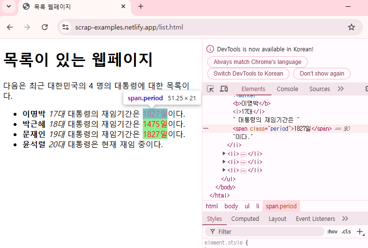 툴팁의 CSS 실렉터로 요소를 추출해 보자. 결과에서 보듯이 선택된 요소가 추출되지만, 동일한 CSS 선택자에 매칭되는 다른 요소들도 선택되는 경우가 자주 있다.
{xml_nodeset (3)}
[1] <span class="period">1827일</span>
[2] <span class="period">1475일</span>
[3] <span class="period">1827일</span>SelectorGadget을 이용한 CSS 선택자 추출
추출하고자 하는 요소의 CSS 선택자를 쉽게 추출하는 방법은 Chrome의 확장 프로그램인 SelectorGadget을 사용하는 것이다.
SelectorGadget을 설치하는 방법은 다음과 같다.
- Chrome 메뉴에서 [확장 프로그램]-[Chrom 웹 스토어 방문하기]를 선택한다.
- SelectorGadget을 검색하여 확장 프로그램으로 추가한다.
- 설치 후 브라우저 메뉴바에 나타나는 확장 프로그램 아이콘을 클릭한 후 SelectGadget을 메뉴 바에 고정한다.
데이터를 추출하려는 웹 페이지로 이동한 후 Chrome 메뉴 바의 SelectorGadget을 클릭하여 실행한다. 그러면 다음 그림처럼 웹 페이지 하단에 SelectorGadget 메뉴창이 나타난다.
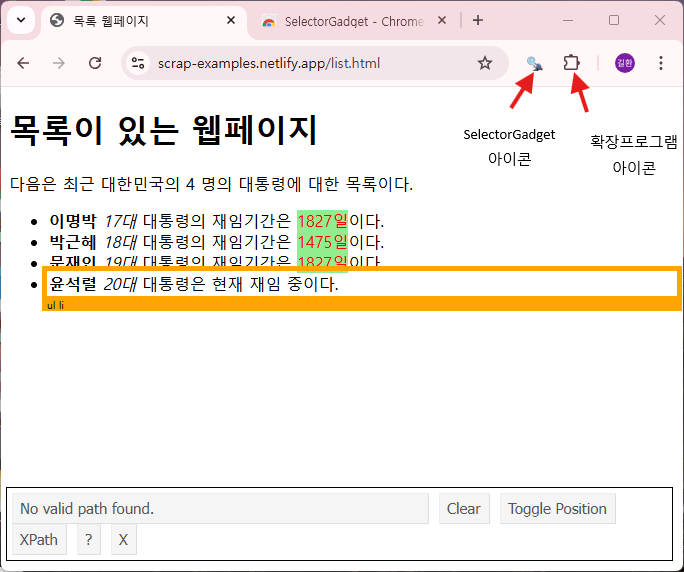
SelectorGadget에서 원하는 요소에 대한 CSS 선택자를 추출하는 절차는 다음과 같다.
- 웹 페이지에서 추출할 요소 선택
- SelectorGadget이 실행된 상태에서 추출한 요소를 마우스로 클릭한다. 그러면 선택된 요소는 녹색으로 변경된다.
- 선택된 요소를 지정하는 CSS 선택자가 웹 페이지 하단의 SelectorGadget 메뉴창에 나타난다.
- 현재의 CSS 선택자로 추출되는 모든 요소가 노란색으로 표현된다.
- SelectorGadget이 실행된 상태에서 추출한 요소를 마우스로 클릭한다. 그러면 선택된 요소는 녹색으로 변경된다.
- 웹 페이지에서 추출할 요소를 추가 선택
- 현재의 CSS 선택자로 아직 선택이 안된가 있으면 마우스로 요소를 클릭한다.
- 그러면 현재 선택된 요소뿐 아니라 새롭게 클릭된 요소를 포함하도록 CSS 선택자가 변경된다.
- 새롭게 변경된 CSS 선택자로 추출되는 모든 요소가 노란색으로 표현된다.
- 웹 페이지에서 요소 선택 해제
- 선택된 요소를 해제하려면 다시 마우스로 클릭한다. 선택된 요소는 빨간색으로 변경된다.
- 이 요소가 선택되지 않도록 CSS 선택자가 변경된다.
- 새롭게 변경된 CSS 선택자로 추출되는 모든 요소가 노란색으로 표현된다.
- 모든 선택 해제
- 처음부터 다시 시작하려면 SelectorGadget 메뉴창에서
Clear를 선택한다.
- 처음부터 다시 시작하려면 SelectorGadget 메뉴창에서
- 원하는 요소의 조합을 얻었으면 SelectorGadet 메뉴창에 나타나는 CSS 선택자를 복사하여 요소를 추출한다.
- SelectorGadget을 중지하려면 SelecorGadget 메뉴창에서
X를 선택한다.
SelectorGadget에 대한 자세한 사용법은 rvest 홈페이지의 SelectorGadget 글을 참조한다.
다음은 SelectorGadget을 사용하여 목록의 첫 번째 재임기간만 선택하는 CSS 선택자를 얻은 후 실행한 결과이다.
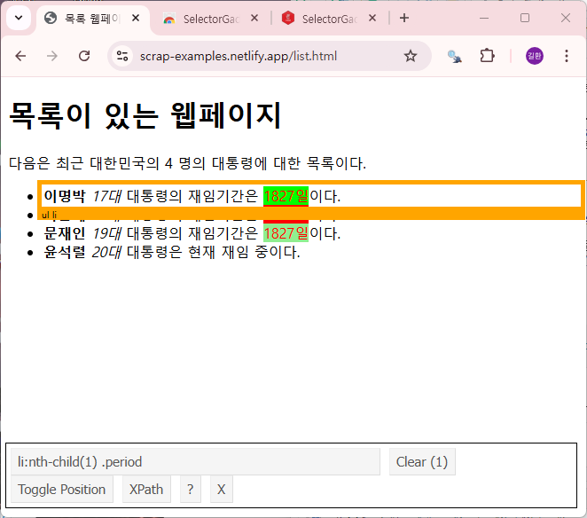
{xml_nodeset (1)}
[1] <span class="period">1827일</span>일반적으로 웹 페이지의 동일한 요소들을 여러 개의 다른 CSS 선택자로 추출할 수 있다. 그러므로 선택하고자 하는 요소와 제외하고자 하는 요소를 클릭하는 순서 등에 따라 동일한 요소의 CSS 선택자가 다르게 출력될 수 있다.
영화 순위 페이지 스크래핑
현재 다음과 네이버는 영화 서비스를 중단한 상태이다. 여기서는 과거 웹 페이지를 저장하는 web.archive.org에서 2023년 다음 영화 페이지를 가져오도록 한다. 이 페이지는 2023년 2월 중의 박스오피스 순위 정보 페이지이다.
target <- "https://web.archive.org/web/20230208141058/https://movie.daum.net/ranking/boxoffice/yearly"
html <- read_html(target)
html{html_document}
<html lang="ko">
[1] <head>\n<meta http-equiv="Content-Type" content="text/html; charset=UTF-8 ...
[2] <body class=""> \n <div class="direct-link"> \n <a href="#mainC ...박스오피스에 있는 영화 이름을 추출해보자.
- SelectGadget을 구동한 후 ‘다음’ 영화 랭킹 페이지에서 영화 이름을 클릭한다.
- 영화 이름뿐 아니라 페이지 마지막의 요소도 선택된다. 이 요소들을 클릭하여 제외시킨다.
- 페이지의 영화 이름만 노란색으로 선택되고 다른 요소는 선택되지 않았는지를 확인한다.
- SelectGadget에 나타난 정보를
html_elements()에 문자열 인수로 제공하여 영화 이름을 추출한다.
[1] "범죄도시2"
[2] "탑건: 매버릭"
[3] "아바타: 물의 길"
[4] "한산: 용의 출현"
[5] "공조2: 인터내셔날"
[6] "닥터 스트레인지: 대혼돈의 멀티버스"
[7] "헌트"
[8] "올빼미"
[9] "쥬라기 월드: 도미니언"
[10] "마녀(魔女) Part2. The Other One"
[11] "토르: 러브 앤 썬더"
[12] "미니언즈2"
[13] "블랙 팬서: 와칸다 포에버"
[14] "비상선언"
[15] "스파이더맨: 노 웨이 홈"
[16] "육사오(6/45)"
[17] "헤어질 결심"
[18] "외계+인 1부"
[19] "영웅"
[20] "해적: 도깨비 깃발"
[21] "브로커"
[22] "신비한 동물들과 덤블도어의 비밀"
[23] "인생은 아름다워"
[24] "더 배트맨"
[25] "데시벨"
[26] "정직한 후보2"
[27] "씽2게더"
[28] "극장판 짱구는 못말려: 수수께끼! 꽃피는 천하떡잎학교"
[29] "블랙 아담"
[30] "킹메이커"
[31] "자백"
[32] "언차티드"
[33] "경관의 피"
[34] "오늘 밤, 세계에서 이 사랑이 사라진다 해도"
[35] "극장판 주술회전 0"
[36] "압꾸정"
[37] "극장판 포켓몬스터DP: 기라티나와 하늘의 꽃다발 쉐이미"
[38] "이상한 나라의 수학자"
[39] "명탐정 코난: 할로윈의 신부"
[40] "동감"
[41] "모비우스"
[42] "늑대사냥"
[43] "뽀로로 극장판 드래곤캐슬 대모험"
[44] "특송"
[45] "니 부모 얼굴이 보고 싶다"
[46] "놉"
[47] "리멤버"
[48] "킹스맨: 퍼스트 에이전트"
[49] "배드 가이즈"
[50] "뜨거운 피" 이번에는 영화 개봉일 데이터를 추출해 보자.
Clear단추를 사용하여 현재 선택된 내용을 삭제한다.- 웹 페이지에서 개봉일만 선택되도록 클릭한다.
- 원하는 요소만 선택되었는지 확인한다.
- SelectGadget에 나타난 정보를
html_elements()에 문자열 인수로 제공하여 정보를 추출한다.
[1] "22.05.18" "22.06.22" "22.12.14" "22.07.27" "22.09.07" "22.05.04"개봉일은 날짜 정보이므로 parse_date()로 이를 날짜 형식으로 변환한다.
날짜 형식에 사용되는 포맷 문자는 parse_date의 도움말에서 확인할 수 있다.
release <- html %>% html_elements(".txt_num") %>%
html_text() %>%
parse_date(format="%y.%m.%d")
release [1] "2022-05-18" "2022-06-22" "2022-12-14" "2022-07-27" "2022-09-07"
[6] "2022-05-04" "2022-08-10" "2022-11-23" "2022-06-01" "2022-06-15"
[11] "2022-07-06" "2022-07-20" "2022-11-09" "2022-08-03" "2021-12-15"
[16] "2022-08-24" "2022-06-29" "2022-07-20" "2022-12-21" "2022-01-26"
[21] "2022-06-08" "2022-04-13" "2022-09-28" "2022-03-01" "2022-11-16"
[26] "2022-09-28" "2022-01-05" "2022-09-28" "2022-10-19" "2022-01-26"
[31] "2022-10-26" "2022-02-16" "2022-01-05" "2022-11-30" "2022-02-17"
[36] "2022-11-30" "2022-06-01" "2022-03-09" "2022-07-13" "2022-11-16"
[41] "2022-03-30" "2022-09-21" "2022-07-28" "2022-01-12" "2022-04-27"
[46] "2022-08-17" "2022-10-26" "2021-12-22" "2022-05-04" "2022-03-23"영화 관객수를 추출해 보자.
Clear단추를 사용하여 현재 선택된 내용을 삭제한다.- 웹 페이지에서 관객수 클릭하면 개봉일 정보도 같이 선택된다.
- 개봉일을 클릭하면 빨간 색으로 바뀌면서 관객수 정보만 선택되는 것을 확인한다.
- SelectGadget에 나타난 정보를
html_elements()에 문자열 인수로 제공하여 정보를 추출한다.
[1] "관객수12,693,415명" "관객수8,177,452명" "관객수10,581,515명"
[4] "관객수7,264,934명" "관객수6,982,940명" "관객수5,884,595명" 관객수는 수치이므로 텍스트에서 숫자만 추출한다.
parse_number()함수로 문자를 숫자로 변환- 숫자의 자릿수 형식을 지정하기 위해
locale()함수 사용
audience <- html %>% html_elements(".info_txt+ .info_txt") %>% html_text() %>%
parse_number(locale = locale(grouping_mark = ","))
audience [1] 12693415 8177452 10581515 7264934 6982940 5884595 4352407 3327105
[9] 2837413 2806501 2716306 2269033 2105834 2058869 7551990 1980773
[17] 1895856 1539364 3154410 1339242 1261131 1195443 1171648 904238
[25] 901426 899684 885419 837647 779489 783567 738122 730847
[33] 684667 1051490 663158 608639 581223 534291 490869 490145
[41] 475928 458720 447777 444417 416524 415969 412836 1029365
[49] 400329 398105지금까지 추출된 정보를 이용하여 데이터프레임을 생성한다.
# A tibble: 50 × 3
title release audience
<chr> <date> <dbl>
1 범죄도시2 2022-05-18 12693415
2 탑건: 매버릭 2022-06-22 8177452
3 아바타: 물의 길 2022-12-14 10581515
4 한산: 용의 출현 2022-07-27 7264934
5 공조2: 인터내셔날 2022-09-07 6982940
6 닥터 스트레인지: 대혼돈의 멀티버스 2022-05-04 5884595
7 헌트 2022-08-10 4352407
8 올빼미 2022-11-23 3327105
9 쥬라기 월드: 도미니언 2022-06-01 2837413
10 마녀(魔女) Part2. The Other One 2022-06-15 2806501
# ℹ 40 more rows개봉일과 관객수의 분포를 시각화해 보자.
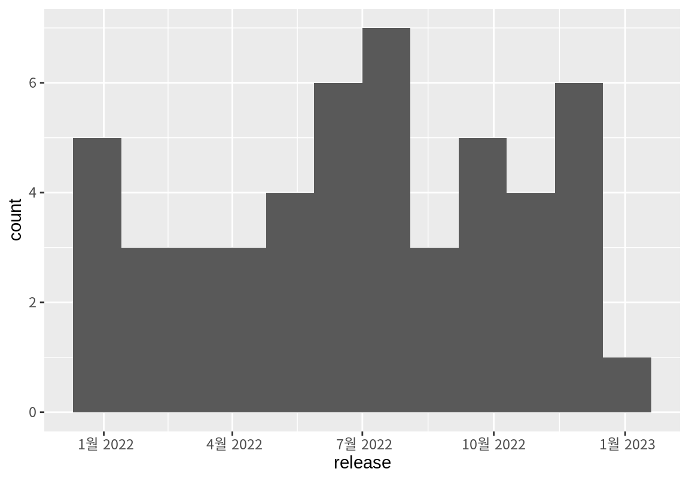
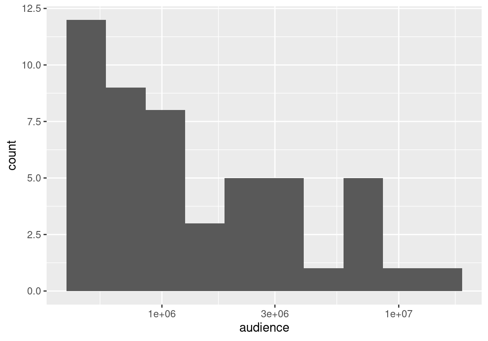
상영 기간이 서로 다른 영화들이므로 일일 평균 영화 관객수로 영화의 흥행도를 분석해 보자.
movies %>%
mutate(
days = as.Date("20230206", "%Y%m%d") - release,
aud_per_day = audience / as.numeric(days, units="days")
) %>%
arrange(desc(aud_per_day))# A tibble: 50 × 5
title release audience days aud_per_day
<chr> <date> <dbl> <drtn> <dbl>
1 아바타: 물의 길 2022-12-14 10581515 54 days 195954.
2 영웅 2022-12-21 3154410 47 days 67115.
3 범죄도시2 2022-05-18 12693415 264 days 48081.
4 공조2: 인터내셔날 2022-09-07 6982940 152 days 45940.
5 올빼미 2022-11-23 3327105 75 days 44361.
6 한산: 용의 출현 2022-07-27 7264934 194 days 37448.
7 탑건: 매버릭 2022-06-22 8177452 229 days 35709.
8 헌트 2022-08-10 4352407 180 days 24180.
9 블랙 팬서: 와칸다 포에버 2022-11-09 2105834 89 days 23661.
10 닥터 스트레인지: 대혼돈의 멀티버스 2022-05-04 5884595 278 days 21168.
# ℹ 40 more rows웹 페이지의 표 데이터 수집하기
네이버 SPORTS의 배구 섹션의 기록/순위 페이지에서 여자부 선수들의 기록을 수집해 보자.
- 배구 섹션의 순위 페이지에서 [여자부]를 선택한다.
- 기록을 가져올 시즌을 선택한다. [2023-2024] 시즌을 선택해 보자.
- 페이지의 URL 브라우저에서 확인 후 R 스크립트에 복사한다.
target <- "https://sports.news.naver.com/volleyball/record/index?category=wkovo&year=2022"
html <- read_html(target)웹 페이지의 표는 <table> 태그로 되어 있고, rvest는 웹 문서의 표를 데이터프레임으로 추출할 수 있다.
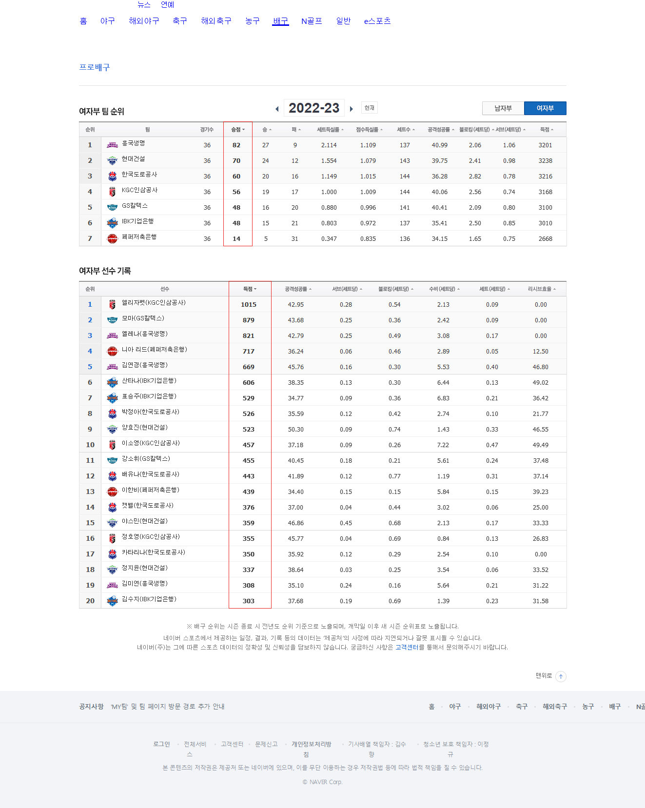
html_table()함수를 사용하면 HTML 또는 특정 노드 아래에 있는 모든 table을 추출이 가능하다.
- 각 table은 tibble로 저장된다.
- 여러 개의 table이 있는 경우 리스트로 저장된다.
[1] 2웹 페이지에 표가 여러 개 있는 경우에 표 하나를 특정하여 데이터를 수집할 수도 있다.
- 웹 페이지에서 선택하고자 하는 표를 선택한 후 컨텍스트 메뉴에서
검사를 선택한다. - 개발자 도구의 HTML 문서에서 데이터를 수집하려는 표에 상응하는